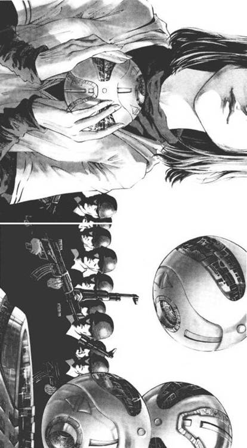

22.红岸之五
自从进入红岸基地后，叶文洁就没有想到能够出去，在得知红岸工程真实目的后（这个绝密信息是基地许多中层干部都不知道的），她把与外界精神上的联系也斩断了，只是埋头于工作。这以后，她更深地介入到红岸系统的技术核心，开始承担比较重要的研究课题。对于杨卫宁给予叶文洁的信任，雷志成一直耿耿于怀，但他还是很愿意将重要课题交到叶文洁手上——以叶文洁的身份，她对自己的研究成果没有任何权利；而基地中，只有雷志成是天体物理专业出身的，是当时少见的知识分子政委；这样，叶文洁的成果和论文最后都被他占去，使他成了部队政工干部中又红又专的典型。
调叶文洁进入红岸基地的最初缘由，是她读研究生时发表在《天文学学报》上的那篇试图建立太阳数学模型的论文。其实，与地球相比，太阳是一个更简单的物理系统，只是由氢和氦这两种很简单的元素构成，它的物理过程虽然剧烈，但十分单纯，只是氢至氦的聚变，所以，有可能建立一个数学模型来对太阳进行较为准确的描述。那论文本来是一篇很基础的东西，但杨卫宁和雷志成却从中看到了解决红岸监听系统一个技术难题的希望。
凌日干扰问题一直困扰着红岸的监听操作。这个名词是从刚出现的通信卫星技术中借来的，当地球、卫星和太阳处于同一条直线时，地面接收天线对准的卫星是以太阳为背景的，太阳是一个巨大的电磁发射源，这时地面接收的卫星微波就会受到太阳电磁辐射强烈干扰，这个问题后来直到二十一世纪都无法解决。红岸所受到的凌日干扰与此类似，不同的是干扰源（太阳）位于发射源（外太空）和接收器之间。与通信卫星相比，红岸所受的凌日干扰出现的时间更频繁，也更严重。实际的红岸系统又比原设计缩水了许多，监听和发射系统共用一个天线，这使得监听的时间较为珍贵，凌日干扰也就成为一个严重问题了。
杨卫宁和雷志成的想法很简单：搞清太阳发射的电磁波在监测波段上的频谱规律和特征，用数字滤波滤掉它，就可排除干扰。两人都是技术专家，在这外行领导内行的年代，这是难能可贵的。但杨卫宁不是天体物理专业的，雷志成则是走政工道路的人，在专业上不可能知道得太深。其实太阳电磁辐射的稳定只局限于包括可见光在内的从近紫外到中红外波段，在其他的波段上，它的辐射是动荡不定的。叶文洁首先明智地在第一份研究报告中明确一点：在太阳黑子、耀斑、日冕物质抛射等太阳剧烈爆发性活动期间，凌日干扰无法排除。于是，研究对象只局限于太阳正常活动时红岸监测波段内的电磁辐射。
基地内的研究条件还是不错的，资料室可以按课题内容调来较全的外文资料，还有很及时的欧美学术期刊，在那个年代这是件很不容易的事。叶文洁还可以通过军线，与中科院两家研究太阳的科研单位联系，通过传真得到他们的实时观测数据。
叶文洁的研究持续了半年，丝毫看不到成功的希望。她很快发现，在红岸的观测频率范围内，太阳的辐射变幻莫测。通过对大量观测数据的分析，叶文洁发现了令她迷惑的神秘之处：有时，上述某一频段辐射发生突变时，太阳表面活动却平静如常，上千次的观测数据都证实了这一点。这就很令她费解了。短波和微波频段的辐射不可能穿透几十万公里的太阳表层来自太阳核心，只能是太阳表层活动产生的，当突变发生时，这种活动应该能够观测到，如果太阳没有相应的扰动，这狭窄频段的突变是什么引起的？这事让她越想越觉得神秘。
研究到了山穷水尽的地步，叶文洁决定放弃了。她在最后一份报告中承认自己无能为力。这件事情应该比较好交代的，军方委托中科院的几个单位和大学进行的类似研究都以失败告终，杨卫宁不过是想借助叶文洁的过人才华再试一试。而雷志成的真实想法就更简单了，他只想要叶文洁的论文。这项研究理论性很强，更能显示出他的水平和层次。现在，社会上疯狂的浪潮渐渐平息，对干部的要求也有了一些变化，像他这样在政治上成熟、学术上又有造诣的人，是奇缺的，当然前途无量。至于凌日问题是否能够解决，倒不是他最关心的。
但叶文洁最终还是没有把报告交上去，她想到，如果研究结束，基地资料室为这个课题进行的资料调集和外文期刊订阅就会停止，她就再也不可能接触到这么丰富的天体物理学资料了。于是，她在名义上还是将研究进行下去，实际上则潜心搞自己的太阳数学模型。
这天夜里，资料室寒冷的阅览室中照例只有叶文洁一人，她面前的长桌上摊开了一堆期刊和文献。完成一段繁琐的矩阵计算后，她呵呵冻僵的手，拿起了一本最新一期《天体物理学》杂志，仅仅是作为休息，随便翻了翻，一篇关于木星研究的论文引起了她的注意，论文的提要如下：
在上期的短讯《太阳系内新的强发射源》中，威尔逊山天文台的哈里·比德森博士公布了一批数据，是有关他在6月12日和7月2日对木星由行星引力导致的自转摆动观测中，意外两次检测到木星本身发出强烈的电磁辐射，每次持续时间分别为81秒和76秒，这批数据记录了辐射的频率范围和其他参数。在射电爆发期间，观测到木星表面大红斑状态的某些变化，比德森也在短讯中进行了描述。木星射电爆发在行星学术界引起很大兴趣，这期刊发的G·麦肯齐的文章，认为这是木星内部核聚变启动的征兆；下期将刊发井上云石的文章，将木星射电爆发归结为一个更复杂的机制：内部金属氢板块的运动，并给出了完整的数学描述。
叶文洁清楚记得这两个日期和时间，当时，红岸监听系统受到了强烈的凌日干扰。她查了一下运行日志，证实了自己的记忆，只是来自太阳的凌日干扰比来自木星的电磁辐射到达地球的时间晚了十六分四十二秒，这关键的十六分四十二秒啊！叶文洁抑制住剧烈的心跳，请资料室的有关人员与国家天文台联系，得到了那两个时间木星和地球的位置坐标。她在黑板上画出了一个大大的三角形，三个顶点分别是太阳、地球和木星。她在三条边上分别标上距离，在地球顶点标上了两个到达时间。由木星到地球的距离很容易算出电磁辐射由木星直接到达地球消耗的时间，她接着又算出了电磁辐射由木星到达太阳、再由太阳到达地球的时间，两者相差正是十六分四十二秒！
叶文洁翻出了以前自己搞出的太阳结构数学模型，试图从理论上找到一些蛛丝马迹。她的目光很快锁定在太阳辐射层中一种叫“能量镜面”的东西上。从日核反应区发出的能量开始是以高能伽马射线的形式发出，辐射区通过对这些高能粒子的吸收，再发射实现能量传递，经过无数次这种再吸收再辐射的漫长过程（一个光子脱离太阳可能需要一千年的时间），高能伽马射线经过X射线、极紫外线、紫外线逐渐变为可见光和其他形式的辐射。这些是在太阳研究中早已明确的内容。叶文洁的数学模型产生的一个新结果是：在这些不同频率辐射的转换之间，存在着许多明显的界面，辐射区由里向外，每越过一个界面，辐射频率就明显下降一个等级，这与传统观点认为辐射区的频率是渐变的有所不同。计算表明，这种界面会将来自低频侧的辐射反射回去，于是她就想了那么一个命名。
叶文洁开始仔细研究这一层层悬浮在太阳电浆海洋中的飘忽不定的薄膜，她发现，这种只能在恒星内部的高能海洋中出现的东西，有许多奇妙的性质，其中最不可思议的是它的“增益反射”特性，而这与太阳电磁辐射之谜似乎有关。但这种特性过分离奇，难以证实，叶文洁自己都难以置信，更有可能是令人目眩的复杂计算中产生的一些误导所致。
现在，叶文洁初步证实了自己关于太阳能量镜面增益反射的猜想：能量镜面并非简单地反射低频侧的电磁辐射，而是将它放大了！以前观测到的那些在狭窄频段的神秘突变，其实是来自宇宙间的辐射被放大后的结果，所以在太阳表面观察不到任何相应的扰动。
很可能，这一次，太阳收到木星的电磁辐射后又发射出来，只是强度增加了近亿倍！地球以十六分四十二秒的时间差分别收到了放大前后的两次辐射。
太阳是一个电波放大器！
这里出现一个问题：太阳每时每刻都在接收来自太空的电磁辐射，包括地球溢出的无线电波，为什么它只放大其中的一部分呢？原因很明显：除了能量镜面对反射频率的选择外，主要是太阳对流层的屏蔽作用。表面沸腾不息的对流层位于辐射层之上，是太阳最外一层液态层。来自太空的电波首先要穿透对流层才能到达辐射层的能量镜面，进而被放大后反射出去。这就需要射入的电波在功率上超过一个阈值，地球上绝大部分的无线电发射都远低于这个阈值，但木星的电磁辐射超过了——
红岸的最大发射功率也超过了这个阈值！
凌日干扰问题仍未得到解决，但另一个激动人心的可能性出现了：人类可以将太阳作为一个超级天线，通过它向宇宙中发射电波，这种电波是以恒星级的能量发出的，它的功率比地球上能够使用的全部发射功率还要大上亿倍。
地球文明有可能进行Ⅱ型文明能级的发射！
下一步，需要将那两次木星电磁辐射的波形与红岸受到的凌日干扰的波形相对照，如果吻合，这个猜想就得到了进一步的证实。
叶文洁向领导提出要求，要与哈里·比德森联系，取得那两次木星电磁辐射的波形记录。这不是一件容易的事情，渠道不好找，还有众多部门的一道道手续要办，弄岔一点就有里通外国的嫌疑，叶文洁只好等待。
但还有一个更直接的证实方法：红岸发射系统以超过那个阈值的功率直接向太阳发射电波。
叶文洁找到领导，提出了这个要求，但没敢直接说出自己的想法，那太玄乎了，肯定遭到否决，她只是说这是一次对太阳研究进行的试验，将红岸发射系统作为对太阳的探测雷达，通过接收回波来分析反映太阳电磁辐射的一些信息。雷志成和杨卫宁都有很深的技术背景，想骗他们不容易，但叶文洁说出的这项试验，在西方太阳研究中确实有过先例，事实上，这比正在进行中的对类地行星的雷达探测在技术上还简单些。
“叶文洁呀，你越来越出格了，你的课题，在理论上搞搞就行了，有必要弄这么大动作吗？”雷志成摇摇头说。
“政委，可能有重大发现。实验是必须的，只这一次，行吗？”叶文洁苦苦央求道。
杨卫宁说：“雷政委，要不就做一次？操作上好像没什么太大困难，回波在发射后传回要……”
“十几分钟吧。”雷志成说。
“这样红岸系统正好有时间转换到接收状态。”
雷志成再次摇头，“我知道在技术上和工作量上都没什么，但你……唉，杨总啊，你头脑中缺的就是这根弦啊——向红太阳发射超强烈的电波，你想过这种实验的政治含义吗？”
杨卫宁和叶文洁一时瞠目结舌，他们并不是感到这理由荒唐，相反，是为自己没有想到而后怕。那个年代，对一切事物的政治图解已达到了极其荒唐的程度，叶文洁上交的研究报告，雷志成必须进行仔细审阅，对有关太阳的技术用词反复斟酌修改，像“太阳黑子”这类词汇都不能出现。向太阳发射超强电波的实验当然可以做出一千个正面解释，但只要有一个反面解释，就可能有人面临灭顶之灾。雷志成拒绝实验的这个理由，确实是不可能被推翻的。
叶文洁没有放弃，其实只要冒不大的险，做成这事很容易。红岸发射系统的发射器是超高功率的设备，全部使用“文革”期间生产的国产元件，由于质量不过关，故障率很高，不得不在每十五次发射后就全面检修一次，每次检修完成后都要例行试运行，参加这种发射的人很少，目标和其他发射参数也是比较随意的。
在一次值班中，叶文洁被分配进行例行检修后的测试，由于试发射省去了很多操作，在场的除叶文洁外只有五个人，其中三个是对设备原理知之甚少的操作员，另外的一名技术员和一名工程师已在持续了两天的检修中疲惫不堪，心不在焉。叶文洁首先将发射功率设置到刚刚超过太阳增益反射理论上的阈值（这已是红岸发射系统的最大功率了），频率设定在最可能被能量镜面放大的频率上，借测试天线机械性能为名，将它对准已斜挂在西天的太阳，发射的内容仍同每次正规发射一样。
这是1971年秋天一个晴朗的下午，事后叶文洁多次回忆那一时刻，并没有什么特别的感觉，只是焦急，盼望发射快些完成，一方面是怕在场的同事发现，虽然她想好了推托的理由，但以损耗元件的最大功率进行发射实验毕竟是不正常的；同时，红岸发射系统的定位设备不是设计用于瞄准太阳的，叶文洁用手就能感到光学系统在发烫，如果烧坏麻烦就大了。太阳在西天缓缓下落，叶文洁不得不手动跟踪，这时，红岸天线像一棵巨大的向日葵，面对着下落中的太阳缓缓转动。当发射完成的红灯亮起时，她浑身已被汗水浸透了。扭头一看，三名操作员正在控制台上按手册依次关闭设备，那名工程师在控制室的一角喝水，技术员则靠在长椅子上睡着了。不管后来的历史学家和文学家们如何描述，当时的真实情景就是这样平淡无奇。
发射一完成，叶文洁就冲出控制室，跑进杨卫宁的办公室，喘着气说：“快，让基地电台在12000兆赫上接收！”
“收什么？”杨总工程师惊奇地看着头发被汗水粘到脸上的叶文洁，与灵敏度极高的红岸接收系统相比，基地用于与外界联系的常规军用电台只是个玩具。
“也许能收到一些东西，红岸系统没有时间转换到接收状态了！”叶文洁说。正常情况下，红岸接收系统的预热和切换只需十多分钟，而现在接收系统也在检修中，很多模块拆卸后还未组装，根本无法在短时间内运行。
杨卫宁看了叶文洁几秒钟，拿起了电话，吩咐机要通讯室按叶文洁说的去做。“那个电台的精度，大概只能收到月球上外星人的信号。”
“信号来自太阳。”叶文洁说。窗外，太阳的边缘已接近天边的山顶，血红血红的。
“你用红岸系统向太阳发信号了？”杨卫宁紧张地问。
叶文洁点点头。
“这事不要对别人说，下不为例，绝对的下不为例！”杨卫宁警觉地回头看看门口说。
叶文洁又点点头。
“这有什么意义嘛，回波一定是极弱的，远远超出了常规电台的接收能力。”
“不，如果我的猜想是正确的，将收到极强的回波，强得……难以想象，只要发射功率超过一个阈值，太阳……就能成亿倍地放大电波！”
杨卫宁又奇怪地看着叶文洁，后者沉默了。两人静静地等着，杨卫宁能够清晰地听到叶文洁的呼吸和心跳，对她刚才的话他没太在意，只是埋藏了多少年的感情又涌上心头，但他只能控制着自己，等待着。二十分钟后，杨卫宁拿起电话，要通了通讯室，简单地问了两句。
“什么都没收到。”杨卫宁放下电话说。
叶文洁长出了一口气，好半天才点点头。
“那个美国天文学家回信了。”杨卫宁拿出一个厚厚的信封递给叶文洁，上面盖满了海关的印章。叶文洁迫不及待地拆开信封，先是大概扫了一眼哈里·比德森的信，信上说他没有想到中国也有研究行星电磁学的同行，希望多多联系和合作。他寄来的是两叠纸，上面完整地记录了来自木星两次电磁辐射的波形，波形显然是从长条信号记录纸上复印下来的，要对起来看，而这个时候的中国人，还大多没有见过复印机。叶文洁将几十张复印纸在地板上排成两排，排到一半时她就已经不抱任何希望了，她太熟悉那两次凌日干扰的波形了，与这两条肯定对不上。
叶文洁慢慢地从地上将那两排复印纸收拾起来。杨卫宁蹲下帮她收拾，当他将手中的一打纸递给这个他内心深处爱着的姑娘时，看到她摇摇头笑了一下，那笑很凄婉，令他心颤。
“怎么？”他轻轻地问，没有意识到自己同她说话从来没有这么轻声过。
“没什么，一场梦，醒了而已。”叶文洁说完又笑了笑，抱着那摞复印纸和信封走出了办公室。她回到住处，取了饭盒去食堂，才发现只剩下馒头和咸菜了。食堂的人又没好气地告诉她要关门了，她只好端着饭盒走了出来，走到那道悬崖前，坐在草地上啃着凉馒头。
这时太阳已经落山，大兴安岭看上去是灰蒙蒙的一片，就像叶文洁的生活，在这灰色中，梦尤其显得绚丽灿烂。但梦总是很快会醒的，就像那轮太阳，虽然还会升起来，但已不带新的希望。这时叶文洁突然看到了自己的后半生，也只有无际的灰色。她含着眼泪，又笑了笑，继续啃凉馒头。
叶文洁不知道，就在这时，地球文明向太空发出的第一声能够被听到的啼鸣，已经以太阳为中心，以光速飞向整个宇宙。恒星级功率的强劲电波，如磅礴的海潮，此时已越过了木星轨道。
这时，在12000兆赫波段上，太阳是银河系中最亮的一颗星。
23.红岸之六
以后的八年，是叶文洁一生中最平静的一段时间。“文革”中的经历造成的惊惧渐渐平息，她终于能够稍微放松一下自己的精神。红岸工程已经完成了实验和磨合期，一切渐渐转入常规，需要解决的技术问题越来越少，工作和生活变得有规律了。
平静之后，一直被紧张和恐惧压抑着的记忆开始苏醒，叶文洁发现，真正的伤痛才刚刚开始。噩梦般的记忆像一处处死灰复燃的火种，越烧越旺，灼烧着她的心灵。对于普通的女性，也许时间能够渐渐愈合这些创伤，毕竟，“文革”中有她这样遭遇的女性太多了，比起她们中的很多人，她算是幸运的。但叶文洁是一位科学女性，她拒绝忘却，而且是用理性的目光直视那些伤害了她的疯狂和偏执。
其实，叶文洁对人类恶的一面的理性思考，从她看到《寂静的春天》那天就开始了。随着与杨卫宁关系的日益密切，叶文洁通过他，以收集技术资料的名义，购进了许多外文的哲学和历史经典著作，斑斑血迹装饰着的人类历史令她不寒而栗，而那些思想家的卓越思考，则将她引向人性的最本质最隐秘之处。
其实，就是在这近乎世外桃源的雷达峰上，人类的非理性和疯狂仍然每天都历历在目。叶文洁看到，山下的森林，每天都在被她昔日的战友疯狂砍伐，荒地面积日益扩大，仿佛是大兴安岭被剥去皮肤的部分，当这些区域连成一片后，那幸存的几片林木倒显得不正常了。烧荒的大火在那光秃秃的山野上燃起，雷达峰成了那些火海中逃生的鸟儿的避难所，当火烧起来时，基地里那些鸟儿凄惨的叫声不绝于耳，它们的羽毛都被烧焦了。
在更远的外部世界，人类的疯狂已达到了文明史上的顶峰。那段时间，正是美苏争霸最激烈的时期，分布在两个大陆上的数不清的发射井中，在幽灵般潜行于深海下的战略核潜艇上，能将地球毁灭几十次的核武器一触即发，仅一艘“北极星”或“台风”级潜艇上的分导核弹头，就足以摧毁上百座城市，杀死几亿人。但普通人对此仍然一笑置之，似乎与己无关。
作为天体物理学家，叶文洁对核武器十分敏感，她知道这是恒星才具有的力量。她更清楚，宇宙中还有更可怕的力量，有黑洞，有反物质等等，与那些力量相比，热核炸弹不过是一支温柔的蜡烛。如果人类得到了那些力量中的一种，世界可能在瞬间被汽化，在疯狂面前，理智是软弱无力的。
※※※
进入红岸基地四年后，叶文洁和杨卫宁组成了家庭。杨卫宁是真心爱着叶文洁的，为了爱情，他放弃了自己的前途。这时，“文革”最激烈的时期已经过去，政治环境相对温和了一些，杨卫宁没有因为自己的婚姻受到迫害，但因为娶了一个戴着反革命帽子的妻子，被视为政治上不成熟，丢掉了总工程师的职位。他和妻子能够作为普通技术人员留在基地，也仅仅是因为技术上离不开他们。对于叶文洁来说，接受杨卫宁的爱情主要是出于一种报恩的心理，在那最危难的时刻，如果不是他将自己带进这个与世隔绝的避风港，她可能早已不在人世了。杨卫宁很有才华，风度和修养俱佳，不是一个让她讨厌的人，但她自己已心如死灰，很难再燃起爱情的火焰了。
对人类本质的思考，使叶文洁陷入了深重的精神危机。她首先面临的，是一种奉献目标的缺失，她曾是一个理想主义者，需要将自己的才华贡献给一个伟大的目标，现在却发现，自己以前做的一切全无意义，以后也不可能有什么有意义的追求。这种心态发展下去，她渐渐觉得这个世界是那样的陌生，她不属于这里，这种精神上的流浪感残酷地折磨着她，在组成家庭后，她的心灵反而无家可归了。
这天叶文洁值夜班，这是最孤寂的时刻，在静静的午夜，宇宙向它的聆听者展示着广漠的荒凉。叶文洁最不愿意看的，就是显示器上缓缓移动的那条曲线，那是红岸接收到的宇宙电波的波形，无意义的噪声。叶文洁感到这条无限长的曲线就是宇宙的抽象，一头连着无限的过去，另一头连着无限的未来，中间只有无规律无生命的随机起伏，一个个高低错落的波峰就像一粒粒大小不等的沙子，整条曲线就像是所有沙粒排成行形成的一维沙漠，荒凉寂寥，长得令人无法忍受。你可以沿着它向前向后走无限远，但永远找不到归宿。
但今天，当叶文洁扫了一眼波形显示器后，发现有些异样。即使是专业人员，也很难仅凭肉眼看出波形是否携带信息，但叶文洁对宇宙噪声的波形太熟悉了，眼前移动的波形，似乎多了某种说不出来的东西，这条起伏的细线像是有了灵魂，她敢肯定，眼前的电波是被智能调制的！叶文洁冲到另一台主机终端前，察看计算机对目前接收内容识别度的判别，发现识别度是AAAAA！！在这之前，红岸接收到的宇宙电波，识别度从未超过C，如果达到A，波段包含智能信息的可能性就大于百分之九十；连续五个A是一个极端情况，它意味着接收到的信息使用的就是红岸发射信息的语言！叶文洁打开了红岸译解系统，这个软件能对识别度大于B的信息进行试译解，在整个红岸监听过程中，它从未被正式使用过。按软件试验运行中的情况，翻译一段可能的智能编码可能需要几天甚至几个月的运算时间，出来的结果多半还是译解失败。但这次，原始文件刚刚提交，几乎没有时间间隔，屏幕上就显示译解完成。叶文洁打开结果文件，人类第一次读到了来自宇宙中另一个世界的信息，其内容出乎所有人的想象，它是三条重复的警告：
不要回答！
不要回答！！
不要回答！！！
在令她头晕目眩的激动和迷惑中，叶文洁接着译解了第二段信息：
这个世界收到了你们的信息。
我是这个世界的一个和平主义者，我首先收到信息是你们文明的幸运，警告你们：不要回答！不要回答！！不要回答！！！
你们的方向上有千万颗恒星，只要不回答，这个世界就无法定位发射源。
如果回答，发射源将被定位，你们的行星系将遭到入侵，你们的世界将被占领！
不要回答！不要回答！！不要回答！！！
看着显示屏上闪动的绿色字迹，叶文洁已经无法冷静思考，她那被激动和震撼抑制了的智力只能理解以下的事实：现在距她上次向太阳发送信息不到九年，那么这些信息的发射源距地球只有四光年左右，它只能来自距我们最近的恒星系：半人马座三星！
宇宙不荒凉，宇宙不空旷，宇宙充满了生机！人类将目光投向宇宙的尽头，但哪里想到，在距他们最近的恒星中，就存在着智慧生命！
叶文洁看看波形显示，信息仍源源不断地从太空中涌进红岸天线，她打开另一个接口，启动了实时译解，接收到的信息被立刻显示出来。在以后的四个多小时中，叶文洁知道了三体世界的存在，知道了那个一次次浴火重生的文明，也知道了他们星际移民的企图。
凌晨四点多，来自半人马座的信息结束了，译解系统开始无结果地运行，不断发出失败信息，红岸监听系统所听到的，又是宇宙荒凉的噪声。
但叶文洁可以确定，刚才的一切不是梦。
太阳确实是一个超级天线，但八年前那次试验中为什么没有收到回波，为什么木星的辐射波形与后来的太阳辐射对不上？叶文洁后来想出了许多原因，基地的电台可能根本不能接收那个频段的电波，或者收到后只是一团噪音，就认为是什么都没有收到。至于后者，很可能是因为太阳在放大电波的同时，还叠加了一个波形，这个波形是有规律的，在外星文明的译解系统中很容易被剔除，但在她的肉眼看来，木星和太阳的辐射波形就大不相同了。这一点后来得到了证实，叠加的是一个正弦波。
她警觉地四下看看，主机房中值班的还有三人，其中两人在一个角落聊天，一人在终端前打瞌睡，而在监听系统的信息处理部分，能够查看接收内容识别度和访问译解系统的终端只有她面前这两台。她不动声色地迅速操作，将已接收到的信息全部转存到一个多重加密的隐形子目录中，用一年前接收到的一段噪声代替了这五个小时的内容。
然后，她从终端上将一段简短的信息输入红岸发射系统的缓存区。
叶文洁起身走出了监听主控室的大门，一阵冷风吹到她滚烫的脸上，东方晨曦初露，她沿着被晨光微微照亮的石子路，向发射主控室走去。在她的上方，红岸天线的巨掌无声地向宇宙张开着。晨曦照出了门口哨兵那黑色的剪影，像往常一样，叶文洁进门时他没有理会。发射主控室比监听主控室要暗许多，叶文洁穿过一排排机柜，径直走向控制台，熟练地扳动十几个开关，启动了发射系统的预热。坐在控制台旁边的两名值班员抬起头用困乏的眼睛看了看她，其中一人又扭头看了看墙上的钟表，然后一人继续打瞌睡，另一人则翻看着可能已看了许多遍的报纸。在基地里，叶文洁在政治上自然没有任何地位，但在技术上有一定的自由，她常常在发射前检查设备，虽然今天太早了些，距发射操作还有三个小时，但提前预热也是不奇怪的。
漫长的半个小时过去了，叶文洁在这期间重设了发射频率，将其置于太阳能量镜面反射的最优值上，将发射功率设为最大值，然后，她将双眼凑近光学定位系统的目镜，看到太阳正在升出地平线。她启动了天线定位系统，缓缓转动方向杆使其对准太阳。巨型天线转动时产生的隆隆震动传进主控室，有一名值班员又看了叶文洁一眼，但也没说什么。
太阳完全升出了天边连绵的山脊，红岸天线定位器的十字丝的中心对在它的上缘，这是考虑了电波运行的提前量，发射系统已处于就绪状态。发射按钮呈长方形，很像电脑键盘上的空格键，但是红色的。这时，叶文洁的手指悬在它上面两厘米处。
人类文明的命运，就系于这纤细的两指之上。
毫不犹豫地，叶文洁按下了发射键。
“干什么？”一名值班员带着睡意问。
叶文洁冲他笑了笑，没有说话，随即按下另一个黄键中止了发射，又转动方向杆改变了天线的指向然后离开控制台向外走去。
那个值班员看看表，也该下班了，他拿起日志，想把叶文洁刚才启动发射系统的操作记下来，这多少有些异常，但他看看一条记录纸带，发现她只将发射系统启动了不到三秒钟，于是将日志扔回原位，打了个哈欠，戴上军帽走了。正在飞向太阳的信息是：
到这里来吧，我将帮助你们获得这个世界，我的文明已无力解决自己的问题，需要你们的力量来介入。
初升的太阳使叶文洁头晕目眩，出门后没有走出多远，她就昏倒在草地上。
醒来后，她发现自己躺在医务室中，杨卫宁在床边关切地看着她，像多年前在飞机上那样。医生让叶文洁以后注意休息，因为她怀孕了。
24.叛乱
叶文洁讲述完这段历史后，大厅陷入一片静默，在场的许多人显然也是第一次听到这么完整的讲述，汪淼也被深深地吸引了，暂时忘记了目前的危险和恐惧，不由问道：“那么，三体组织是如何发展到这个规模的呢？”
叶文洁回答：“这要从我认识伊文斯说起……不过，这段历史在场的同志们都知道，我们就不要在这上面浪费时间了，以后我可以单独为你讲，但是否有这个机会，就要看你自己了……小汪，我们还是谈谈你的纳米材料吧。”
“你们所说的……主，为什么这样害怕纳米材料呢？”汪淼问。
“因为它能够使人类摆脱地球引力，大规模进入太空。”
“太空电梯？”汪淼立刻想到了。
“是的，那种超高强度的材料一旦能够大规模生产，建设从地表直达地球同步轨道的太空电梯就有了技术基础。对主而言，这只是一项很小的发明，但对地球人类却意义重大。地球人类可以凭借这项技术轻易地进入近地空间，在太空建立起大规模的防御体系便成为可能，所以，必须扑灭这项技术。”
“倒计时的终点是什么？”汪淼问出了这个最令他恐惧的问题。
叶文洁微微一笑，“不知道。”
“你们这样做没有意义！这不是基础研究，大方向对了别人也能做出来的！”汪淼紧张地大声说。
“是没有意义，能够扰乱研究者的思想是最有效的，但我们做得不理想，如你所说，这毕竟是应用研究，不像对基础研究那么有效……”
“说到基础研究，你女儿是怎么死的？”
这个问题令叶文洁沉默了几秒钟，汪淼注意到，她的眼神几乎不为人察觉地黯淡了一下，但旋即接下了刚才的话题，“其实，对于无比强大的主来说，我们做的一切都没有意义，我们只是做自己想做的事。”
叶文洁话音刚落，轰然几声巨响，饭厅的两扇大门同时被撞开，一群端冲锋枪的士兵冲了进来，汪淼注意到他们不是武警而是正规军，他们几乎无声地贴墙而行，很快在三体叛军周围形成了一个包围圈。史强最后走了进来，皮夹克敞着怀，手里握着枪管，枪柄像一把榔头似的露在外面。他大大咧咧地四下看看，突然冲向前去，倒握着枪的手一抡，响起了金属砸在头骨上的闷响，一名三体战士倒了下去，没来得及抽出的手枪摔出老远。几名士兵冲天鸣枪，天花板上落下一片尘土。有人拉起汪淼，飞快地跑出了三体叛军的人群，站到一排士兵后面。
“武器都丢桌子上！谁再炸刺，穿了丫的！”史强指指身后的一排冲锋枪说，“知道各位都是不要命的，我们也是冲不要命来的！我可把话搁这儿了：普通的警务和法律禁区，对你们已经不适用，甚至人类的战争法则对你们也不适用了！既然你们已经与全人类为敌，咱们大家也都没什么可忌讳的。”
三体叛军的人群中有一阵骚动，但并没有大的惊慌。叶文洁不动声色。有三个人突然冲出人群，其中包括扭断潘寒脖子的那个美丽女孩儿，他们冲向那座活动的三体艺术品，一个人抓住了一颗翻飞的金属球，紧紧抱在胸前。
美丽女孩双手托起晶亮的金属球，让人联想到身材苗条的艺术体操运动员，她又露出那动人的笑，用悦耳的声音说：“各位警官，我们手里拿着的是三枚原子弹，每枚当量一千五百吨级，不算大，我们喜欢小玩意儿，这是起爆开关。”
大厅的一切顿时凝固了，唯一在动的是史强。他把倒握的枪插回左腋下的枪套，神态自若地拍拍手。
“我们的要求很简单：让统帅走，然后咱们一起玩什么都行。”女孩接着说，样子有些娇嗔。
“我和同志们在一起。”叶文洁平静地说。
“能证实她说的吗？”史强低声问旁边一位显然是爆炸物专家的军官。
那位军官将一只塑料袋扔到那三个拿球的人跟前，袋中装着一把弹簧秤。一名拿金属球的三体战士拾起塑料袋，取出弹簧秤后将球装进袋子，挂到弹簧秤上，举起来晃了晃，然后把球取出来扔到地上。女孩儿哈哈一笑，这边的爆炸物专家也轻蔑地笑笑。另一个拿球的人也照样称了球，然后也将球扔了。女孩又笑了一声，接过塑料袋将球装了进去，挂到弹簧秤上，标尺哗地一下直落到底。
爆炸物专家脸上的笑容凝固了，低声对史强说：“这个是了。”
史强仍不动声色。
“至少可以肯定里面装有重元素裂变材料，至于引爆系统行不行还不清楚。”爆炸物专家说。
士兵们枪上电筒的光柱集中在那个拿核弹的女孩儿身上，这个艳丽的死亡之花手捧着一千五百吨TNT，灿烂地笑着，仿佛是在舞台聚光灯下迎接着掌声和赞美。
“有一个办法：向那个球射击。”爆炸物专家在大史耳边低声说。
“不会引爆？”
“只会引爆外围的常规炸药，但会将炸药打散，无法对中心核炸药产生精确向心压缩，肯定不会发生核爆炸。”
大史盯着核弹女孩儿，不说话。
“要布置狙击手吗？”
大史几乎不为人察觉地摇摇头。“没有合适位置，那小东西精得能捉鬼，狙击手的长家伙一瞄准她就会觉察。”
说完，大史径直向前走去，拨开人群，站到中间的空地上。

“站住。”核弹女孩向大史抛了个媚眼警告道，右手拇指紧按在起爆开关上，指甲油在电筒光中闪亮着。
“悠着点儿丫头，有件事儿你肯定想知道。”大史站在距女孩七八米远处，从衣袋中掏出一个信封，“你母亲找到了。”
女孩儿神采飞扬的眼睛立刻黯淡了下来，但这时，这双眼睛真的通向她的心灵。
大史趁机又向前跨了两步，将自己与女孩的间距缩短至五米左右，女孩警惕地一举核弹，用目光制止了他。但她的注意力已经被大大分散了。刚才扔掉假核弹的两人中的一个向大史走来，伸手来拿他举着的信封。大史闪电般抽出手枪，他抽枪的动作正好被取信的人挡住，女孩没有看到。她只看到取信人的耳边亮光一闪，怀中的核弹就被击中爆炸了。
一声沉闷的巨响后，汪淼两眼一黑什么都看不到了，他被人拉着拖出食堂，黄色的浓烟从大门涌出，里面的喧闹声和枪声响成一片，不断有人从浓烟中冲到外面……汪淼起身要冲回大厅，被那名爆炸物专家拦腰抱住：“当心！放射性！！”
混乱很快平息了，有十几名三体战士被击毙，其余包括叶文洁在内的二百多人被捕。核弹女孩被炸得血肉模糊，但这枚流产的核弹只炸死她一人，大史面前的取信人被炸成重伤，由于有这人的遮挡，大史只受了些轻伤，但他和爆炸后待在大厅中的其他人一样，受到了严重辐射。
汪淼透过救护车的小窗看着车里的大史，他头上的一道伤口还在流血，给他包扎的护士穿着透明的防护服，大史和汪淼只能用手机说话。
“那个女孩子是谁？”汪淼问。
大史咧嘴一笑，“我他妈的怎么知道，瞎猜的，这样的女孩子，多半没见过妈。我干这行二十多年，就学会了看人。”
“你赢了，真的是有人捣鬼。”汪淼努力地挤出笑来，希望车里的大史能看到。
“老弟，还是你赢了。”大史笑着摇摇头，“老子怎么会想到，奶奶的，竟然真扯到外星人那儿！”
25.雷志成、杨卫宁之死
审问者：姓名？
叶文洁：叶文洁。
审问者：出生日期？
叶文洁：1947年6月。
审问者：职业？
叶文洁：清华大学物理系天体物理专业教授，2004年退休。
审问者：鉴于你的身体情况，谈话过程中你可以要求暂停休息。
叶文洁：谢谢，不用。
审问者：我们今天进行的是普通刑事案件的调查，不涉及更高层次的内容，这不是本次调查的主要部分，我们希望快些结束，希望你能配合。
叶文洁：我知道你指的是什么，我会配合的。
审问者：调查发现，在红岸基地工作期间，你有杀人嫌疑。
叶文洁：我杀死过两个人。
审问者：时间？
叶文洁：1979年10月21日下午。
审问者：受害者的姓名？
叶文洁：基地政委雷志成和基地工程师、我的丈夫杨卫宁。
审问者：讲述一下你作案的动机。
叶文洁：我……是不是能假设你对当时相关的背景有所了解？
审问者：基本了解，不清楚的我会提问。
叶文洁：好的。在接收到外星信息并回信后的当天，我得知收到该信息的不止我一个人，雷志成也收到了。雷政委是那个年代典型的政治干部，政治神经很敏感，用当时的话说，就是阶级斗争这根弦绷得很紧。他背着红岸基地的大部分技术人员，在主计算机中长期后台运行着一个小程序，这个程序不断读取发射和接收的信息缓冲区，并将读到的内容存储在一个隐藏很深的加密文件中，这样，红岸系统发射出去和接收到的信息就有了一个只有他能读取的备份，正是从这个备份中，他发现了红岸接收到的外星文明信息。在我向初升的太阳发出回答信息的当天下午，也就是我从医务室中刚得知自己怀孕后，雷志成把我叫到他的办公室。我看到，他办公桌上的终端屏幕上赫然显示着昨夜收到的来自三体世界的信息……
“从接收到第一批信息到现在，已经过去了八个多小时。你没有报告，反而将原始信息删除或隐藏起来了，是吗？”
我低着头没有回答。
“你下一步的企图我也清楚，你打算回电，如果不是我发现得及时，整个人类文明都将毁在你手中！当然，这不是说我们惧怕来自宇宙的入侵，退一万步说，那种事真的发生了，外星侵略者必然会淹没于人民战争的汪洋大海之中！”
我现在明白了，他还不知道我已经发出了回电。我将回答信息放入发射缓冲区时，使用的不是常规文件接口，这无意中绕开了他的监视程序。
“叶文洁，你是会做出这种事的，对于党和人民，你一直怀有刻骨的仇恨，不会放过任何一个报复的机会。你知道这样做的后果吗？”
我当然知道，于是点点头，雷志成沉默片刻，下面的话却出乎我的预料。
“叶文洁，对于你，我是不会有任何恻隐之心的，你一直都是一个与人民为敌的阶级敌人。但我与杨卫宁是多年的战友，我不能看着他和你一同彻底毁掉，更不能看着他的孩子也跟着毁掉，你有孩子了，不是吗？”
他这话并非随便说说，如果事发，在那个年代，这样性质的问题，不管我丈夫与此事有无关系，都会受到很大牵连，当然还有未出世的孩子。
雷志成压低了声音说：“目前，这件事情还只有我们俩知道，现在要做的，就是把这件事情的影响降到最小。你什么都不要管，就当这件事没有发生，不要向任何人提起，包括杨卫宁，剩下的事情，就由我来处理吧。小叶啊，请相信我，只要你配合，就能避免可怕的后果。”
我立刻明白了雷志成的用心：他想成为第一个发现外星文明的人，这确实是一个名垂青史的绝好机会。
我答应了他，然后离开了办公室，这时我已经在心里决定了一切。
我拿了一只小扳手，走进了接收系统前端处理模块的设备间，打开主机柜，将最下方的接地线的螺栓小心地拧松了，由于我时常需要检查设备，所以谁也没有注意到我干了什么。这时，接地电阻由0.6欧姆一下子上升到5欧姆，接收系统的干扰骤然增大。
值班技术员立刻就知道是接地线故障，因为这种故障以前多次发生，判断起来很容易，但他不会想到是接地线顶端的故障，因为那里固结很好，一般没人动，况且我刚说过顺便看过了。雷达峰的顶部是一种很不寻常的地质结构，覆盖着一层十几米厚的胶泥，这种胶泥层导电性很差，接地线埋下后，接地电阻总是达不到要求；把接地电极深埋也不行，因为这种胶泥层对导线有很强的腐蚀作用，时间长了可能从中部将接地线蚀断。最后，只好将接地线排，从那道悬崖上垂下去，沿着崖壁一直垂到没有胶泥层的地方，将接地电极埋设在崖壁上的那个位置。即使这样，接地仍然不稳定，电阻常常超标，问题都是出在位于接地线在悬崖壁上的部分，这时维修人员就要用绳索吊下去修。那名技术员就向外围维修班打招呼，班里的一名战士在一根铁柱上系好绳索就顺着崖壁下去了，在下面折腾了半个多小时，满头大汗地上来，说找不到故障。这次监听作业眼看就要受到影响，只好上报基地指挥部。我就在悬崖顶上那个系绳索的铁柱旁等着，事情果然如我预料，雷志成跟着那名战士来了。
应该说，雷志成是一名很敬业的政工干部，忠实地按照那时对他们的要求去做：与群众打成一片，时时站在第一线。也许是为了做姿态，但他确实做得很好，基地急难险重的工作中都少不了他的身影，而以往他干得最多的，就是抢修接地线这个既危险又累的活。这工作虽然没有多高的技术含量，但需要经验，因为故障可能是因接地线暴露在露天产生的难以察觉的接触不良，也可能是因为接地电极埋设处因干燥等原因导致的导电性差，现在负责外围维修的这批志愿兵刚刚调换过，都没有经验，所以我估计他多半要来。他系好安全带，就顺着绳索下去了，好像我不存在似的。我借口把那名战士支走了，悬崖顶上只剩下我一人，然后我从衣袋中掏出了一件东西，那是一叠短钢锯，是一条长锯条折成三段后叠在一起的，这样绳索的断口看不出是锯断的。
正在这时，我丈夫杨卫宁来了。
问清事情的缘由后，他向悬崖下看了看，说要是检查接地电极的话需要开挖，老雷一个人在下面太费劲，他要下去帮忙，于是就系上了那名战士留下的安全带。我说再拿一条绳索吧，他说不用，这条绳子就挺粗挺结实，承带两个人没问题。我坚持要拿，他说那你去吧。等我急跑着取回另一条绳索回到悬崖顶时，他早顺着那条绳索下去了。我探头向下看，见他和雷志成已经检查完毕，正沿着同一条绳索向上爬，雷志成在前。
真的不会再有机会了，我掏出那叠钢锯，锯断了绳索。
审问者：我问一句，回答不记录。你当时的感受？
叶文洁：冷静、毫不动感情地做了。我找到了能够为之献身的事业，付出的代价，不管是自己的还是别人的，都不在乎。同时我也知道，全人类都将为这个事业付出史无前例的巨大牺牲，这仅仅是一个微不足道的开始。
审问者：好的，继续吧。
叶文洁：我听到两三声短促的惊叫，然后是身体摔到崖底乱石上的声音，等了一会儿，我看到从崖底流出的那条小溪变红了……关于这件事，我能说的就这些了。
审问者：好的，这是记录，请你仔细看看，准确无误的话，请在这儿签字。
26.无人忏悔
雷志成和杨卫宁遇难后，上级很快以普通工作事故处理了这件事，在基地所有人眼中，叶文洁和杨卫宁感情很好，谁也没有对她起疑心。
新来的基地政委很快上任，生活又恢复了以往的宁静，叶文洁腹中的小生命一天天长大，同时，她也感到了外部世界的变化。
这天，警卫排排长叫叶文洁到门岗去一趟。她走进岗亭，吃了一惊：这里有三个孩子，两男一女，十五六岁的样子，都穿着旧棉袄，戴着狗皮帽，一看就是当地人。哨兵告诉她，他们是齐家屯的，听说雷达峰上都是有学问的人，就想来问几个学习上的问题。叶文洁暗想，他们怎么敢上雷达峰？这里是绝对的军事禁区，岗哨对擅自接近者只需警告一次就可以开枪。哨兵看出了叶文洁的疑惑，告诉她刚接到命令，红岸基地的保密级别降低了，当地人只要不进入基地，就可以上雷达峰来，昨天已经来过几个当地农民，是来送菜的。
一个孩子拿出一本已经翻得很破旧的初中物理课本，他的手黑乎乎的，像树皮一般满是皴裂，他用浓重的东北口音问了一个中学物理的问题：课本上说自由落体开始一直加速，但最后总会以匀速下落，他们想了几个晚上，都想不明白。
“你们跑这么远，就为问这个？”叶文洁问。
“叶老师，您不知道吗？外头高考了！”那女孩儿兴高采烈地说。
“高考？”
“就是上大学呀！谁学习好，谁考的分高谁就能上！一年前就是了，您还不知道？！”
“不推荐了？”
“不了，谁都可以考，连村里‘黑五类’的娃都行呢！”
叶文洁愣了半天，这个变化很让她感慨。过了好一会儿，她才发现面前捧着书的孩子们还等着，忙赶紧回答他们的问题，告诉他们那是由于空气阻力与重力平衡的缘故；同时还许诺，如果以后有学习上的困难，可以随时来找她。
三天后，又有七个孩子来找叶文洁，除了上次来过的三个外，其他四个都是从更远的村镇来的。第三次来找她的孩子是十五个，同来的还有一位镇中学的老师，由于缺人，他物理、数学和化学都教，他来向叶文洁请教一些教学上的问题。这人已年过半百，满脸风霜，在叶文洁面前手忙脚乱，书什么的倒了一地。走出岗亭后，叶文洁听到他对学生们说：“娃娃们，科学家，这可是正儿八经的科学家啊！”以后隔三差五地就有孩子来请教，有时来的人很多，岗亭里站不下，经过基地负责安全警卫的领导同意，由哨兵带着他们到食堂的饭厅里，叶文洁就在那儿支起一块小黑板给孩子们讲课。
1978年的除夕夜，叶文洁下班后天已经完全黑了，基地的人大部分已在三天假期中下了山，到处都是一片寂静。叶文洁回到自己的房间，这里曾是她和杨卫宁的家，现在空荡荡的，只有腹中的孩子陪伴着她。外面的寒夜中，大兴安岭的寒风呼啸着，风中隐隐传来远处齐家屯的鞭炮声。孤寂像一只巨掌压着叶文洁，她觉得自己被越压越小，最后缩到这个世界看不到的一个小角落去了……就在这时，响起了敲门声，开门后叶文洁首先看到哨兵，他身后有几支松明子的火光在寒风中摇曳着，举火把的是一群孩子，他们脸冻得通红，狗皮帽上有冰碴子，进屋后带着一股寒气。有两个男孩子冻得最厉害，他们穿得很单薄，却用两件厚棉衣裹着一个什么东西抱在怀里，把棉衣打开来，是一个大瓷盆，里面的酸菜猪肉馅饺子还冒着热气。
※※※
那一年，在向太阳发出信号八个月后，叶文洁临产了，由于胎位不正，她的身体又很弱，基地卫生所没有条件接生，就把她送到了最近的镇医院。
这竟是叶文洁的一个鬼门关，她遇到了难产，在剧痛和大出血后陷入昏迷，冥冥中只看到三个灼热刺眼的太阳围绕着她缓缓转动，残酷地炙烤着她。这情景持续了很长时间后，她在朦胧中想到，这可能就是她永恒的归宿了，这就是她的地狱，三个太阳构成的地狱之火将永远灼烧着她，这是她因那个超级背叛受到的惩罚。她陷入强烈的恐惧中，不是为自己，而是为孩子——孩子还在腹中吗？还是随着她来到这地狱中蒙受永恒的痛苦？不知过了多久，三个太阳渐渐后退了，退到一定距离后突然缩小，变成了晶莹的飞星，周围凉爽了，疼痛也在减轻，她终于醒了过来。
叶文洁听到耳边的一声啼哭，她吃力地转过脸，看到了婴儿粉嘟嘟、湿乎乎的小脸儿。
医生告诉叶文洁，她出血达两千多毫升，齐家屯的几十位农民来给她献血，他们中很多人的孩子她都辅导过，但更多的是素昧平生，只是听孩子和他们的父母说起过她，要不是他们的话，她死定了。
以后的日子成了问题，叶文洁产后虚弱，在基地自己带孩子是不可能的，她又无亲无故。这时，齐家屯的一对老人来找基地领导，说他们可以把叶文洁和孩子带回家去照顾。男的原来是个猎户，也采些药材，后来周围的林子越来越少，就种地了，但人们还是叫他齐猎头儿。他们有两儿两女，女孩都嫁出去了，一个儿子在外地当兵，另一个成家后与他们一起过，儿媳妇也是刚生了娃。叶文洁这时还没有平反，基地领导很是为难，但也只有这一个办法了，就让他们用雪橇把叶文洁从镇医院接回了家。
叶文洁在这个大兴安岭的农家住了半年多，她产后虚弱，没有奶水，这期间，杨冬吃着百家奶长大了。喂她最多的是齐猎头儿的儿媳妇，叫大凤，这个健壮的东北妮子每天吃着高粱米大渣子，同时奶两个娃，奶水还是旺旺的。屯子里其他处于哺乳期的媳妇们也都来喂杨冬，她们很喜欢她，说这娃儿有她妈的灵气儿。渐渐地，齐猎头儿家成了屯里女人们的聚集地，老的少的，出嫁了的和大闺女，没事儿都爱向这儿跑，她们对叶文洁充满了羡慕和好奇，她也发现自己与她们有很多女人间的话可谈。记不清有多少个晴朗的日子，叶文洁抱着杨冬同屯子里的女人们坐在白桦树柱围成的院子里，旁边有玩耍的孩子和懒洋洋的大黑狗，温暖的阳光拥抱着这一切。她每次都特别注意看那几个举着铜烟袋锅儿的，她们嘴里悠然吐出的烟浸满了阳光，同她们那丰满肌肤上的汗毛一样，发出银亮的柔光。有一次她们中的一位将长长的白铜烟锅递给她，让她“解解乏”，她只抽了两口，就被冲得头昏脑涨，让她们笑了好几天。
同男人们叶文洁倒是没什么话说，他们每天关心的事儿她也听不太明白，大意是想趁着政策松下来种些人参，但又不太敢干。他们对叶文洁都很敬重，在她面前彬彬有礼。她最初对此没有在意，但日子长了后，当她看到那些汉子如何粗暴地打老婆，如何同屯里的寡妇打情骂俏时，说出那些让她听半句都脸红的话，才感到这种敬重的珍贵。隔三差五，他们总有人把打到的野兔山鸡什么的送到齐猎头儿家，还给杨冬带来许多自己做的奇特而古朴的玩具。
在叶文洁的记忆中，这段日子不像是属于自己的，仿佛是从别的人生中飘落的片断，像一片羽毛般飞入自己的生活。这段记忆被浓缩成一幅幅欧洲古典油画，很奇怪，不是中国画，就是油画，中国画上空白太多，但齐家屯的生活是没有空白的，像古典的油画那样，充满着浓郁得化不开的色彩。一切都是浓烈和温热的：铺着厚厚乌拉草的火坑、铜烟锅里的关东烟和莫合烟、厚实的高粱饭、六十五度的高粱酒……但这一切，又都在宁静与平和中流逝着，像屯子边上的小溪一样。
最令叶文洁难忘的是那些夜晚。齐猎头儿的儿子到城里卖蘑菇去了，他是屯里第一个外出挣钱的人，她就和大凤住在一起。那时齐家屯还没通电，每天晚上，她们俩守在一盏油灯旁，叶文洁看书，大凤做针线活。叶文洁总是不自觉地将书和眼睛凑近油灯，常常刘海被烤得吱啦一下，这时她俩就抬头相视而笑。大凤从来没出过这事儿，她的眼神极好，借着炭火的光也能干细活儿。两个不到半周岁的孩子睡在她身边的炕上，他们的睡相令人陶醉，屋里能听到的，只有他们均匀的呼吸声。叶文洁最初睡不惯火炕，总是上火，后来习惯了，睡梦中，她常常感觉自己变成了婴儿，躺在一个人温暖的怀抱里，这感觉是那么真切，她几次醒后都泪流满面——但那个人不是父亲和母亲，也不是死去的丈夫，她不知道是谁。
有一次，她放下书，看到大凤把纳着的鞋底放到膝上，呆呆地看着灯花。发现叶文洁在看自己，大凤突然问：“姐，你说天上的星星咋的就不会掉下来呢？”
叶文洁细看大凤，油灯是一位卓越的画家，创作了这幅凝重色调中又带着明快的古典油画：大凤披着棉袄，红肚兜和一条圆润的胳膊露出来，油灯突出了她的形象，在她最美的部位涂上了最醒目的色彩，将其余部分高明地隐没于黑暗中。背景也隐去了，一切都淹没于一片柔和的黑暗中，但细看还是能看到一片暗红的光晕，这光晕不是来自油灯，而是地上的炭火照出来的，可以看到，外面的严寒已开始用屋里温暖的湿气在窗户上雕出美丽的冰纹了。
“你害怕星星掉下来吗？”叶文洁轻轻地问。
大凤笑着摇摇头，“怕啥呢？它们那么小。”
叶文洁终于还是没有做出一个天体物理学家的回答，她只是说：“它们都很远很远，掉不下来的。”
大凤对这回答已经很满意，又埋头做起针线活儿来。但叶文洁却心绪起伏，她放下书，躺到温暖的炕面上，微闭着双眼，在想象中隐去这间小屋周围的整个宇宙，就像油灯将小屋中的大部分隐没于黑暗中一样。然后，她将大凤心中的宇宙置换过来。这时，夜空是一个黑色的巨大球面，大小正好把世界扣在其中，球面上镶着无数的星星，晶莹地发着银光，每个都不比床边旧木桌上的那面圆镜子大。世界是平的，向各个方向延伸到很远很远，但总是有边的。这个大平面上布满了大兴安岭这样的山脉，也布满了森林，林间点缀着一个个像齐家屯一样的村庄……这个玩具盒般的宇宙令她感到分外舒适，渐渐地这宇宙由想象变成了梦乡。
在这个大兴安岭深处的小山村里，叶文洁心中的什么东西渐渐融化了，在她心灵的冰原上，融出了小小的一汪清澈的湖泊。
※※※
杨冬出生后，在红岸基地，时间在紧张和平静中又过去了两年多。这时，叶文洁接到了通知，她和父亲的案件都被彻底平反；不久之后又收到了母校的信，说她可以立刻回去工作。与信同来的还有一大笔汇款，这是父亲落实政策后补发的工资。在基地会议上，领导终于称她为叶文洁同志了。
叶文洁很平静地面对这一切，没有激动和兴奋。她对外面的世界不感兴趣，宁愿一直在僻静的红岸基地待下去，但为了孩子的教育，她还是离开了本以为要度过一生的红岸基地，返回了母校。
走出深山，叶文洁充满了春天的感觉，“文革”的严冬确实结束了，一切都在复苏之中。虽然浩劫刚刚结束，举目望去一片废墟，无数人在默默地舔着自己的伤口，但在人们眼中，未来新生活的曙光已经显现。大学中出现了带着孩子的学生，书店中文学名著被抢购一空，工厂中的技术革新成了一件最了不起的事情，科学研究更是被罩上了一层神圣的光环。科学和技术一时成了打开未来之门的唯一钥匙，人们像小学生那样真诚地接近科学，他们的奋斗虽是天真的，但也是脚踏实地的。在第一次全国科学大会上，郭沫若宣布科学的春天到来了。
这是疯狂的终结吗？科学和理智开始回归了？叶文洁不止一次地问自己。
直到离开红岸基地，叶文洁再也没有收到来自三体世界的消息。她知道，要想收到那个世界对她那条信息的回答，最少要等八年，何况她离开了基地后，已经不具备接收外星回信的条件了。
那件事实在太重大了，却由她一个人静悄悄地做完，这就产生了一种不真实的感觉。随着时间的流逝，这种虚幻感越来越强烈，那件事越来越像自己的幻觉，像一场梦。太阳真的能够放大电波吗？她真的把太阳作为天线，向宇宙中发射过人类文明的信息吗？真的收到过外星文明的信息吗？她背叛整个人类文明的那个血色清晨真的存在过？还有那一次谋杀……
叶文洁试着在工作中麻木自己，以便忘掉过去——她竟然几乎成功了，一种奇怪的自我保护本能使她不再回忆往事，不再想起她与外星文明曾经有过的联系，日子就这样在平静中一天天过去。
※※※
回到母校一段时间后，叶文洁带着冬冬去了母亲绍琳那里。丈夫惨死后，绍琳很快从精神错乱中恢复过来，继续在政治夹缝中求生存。她紧跟形势高喊口号，终于得到了一点报偿，在后来的“复课闹革命”中重新走上了讲台。但这时，绍琳却做出了一件出人意料的事，与一位受迫害的教育部高干结了婚，当时那名高干还在干校住“牛棚”劳改中。对此绍琳有自己的深思熟虑，她心里清楚，社会上的混乱不可能长久，目前这帮夺权的年轻造反派根本没有管理国家的经验，现在靠边站和受迫害的这批老干部迟早还是要上台执政的。后来的事实证明她这次赌博是正确的，“文革”还没有结束，她的丈夫已经部分恢复了职位，十一届三中全会后，他迅速升到了副部级。绍琳凭着这个背景，在这知识分子重新得到礼遇的时候，很快青云直上。在成为科学院学部委员之后，她很聪明地调离了原来的学校，很快升为另一所名牌大学的副校长。
叶文洁见到的母亲，是一位保养得很好的知识女性形象，丝毫没有过去受磨难的痕迹。她热情地接待了叶文洁母女，关切地询问她这些年是怎么过来的，惊叹冬冬是多么的聪明可爱，细致入微地对做饭的保姆交代叶文洁喜欢吃的菜……这一切都做得那么得体，那么熟练，那么恰到好处。但叶文洁清楚地感觉到她们之间的隔阂，她们小心地避开敏感的话题，没有谈到叶文洁的父亲。
晚饭后，绍琳和丈夫送叶文洁和孩子走了很远，副部长说要和叶文洁说句话，绍琳就先回去了。这时，副部长的脸色一瞬间由温暖的微笑变得冷若冰霜，像不耐烦地扯下一副面具，他说：“以后欢迎你带孩子常来，但有一条，不要来追究历史旧账。对于你父亲的死，你母亲没有责任，她也是受害者。倒是你父亲这个人，对自己那些信念的执著有些变态了，一条道走到黑，抛弃了对家庭的责任，让你们母女受了这么多的苦。”
“您没资格谈我的父亲，”叶文洁气愤地说，“这是我和母亲间的事，与别人无关。”
“确实与我无关，”绍琳的丈夫冷冷地点点头，“我是在转达你母亲的意思。”
叶文洁回头看，在那座带院子的高干小楼上，绍琳正撩开窗帘的一角向这边偷窥。叶文洁无言地抱起冬冬走了，以后再也没有回去过。
※※※
叶文洁多方查访当年打死父亲的那四个红卫兵，居然查到了她们中的三个。这三个人都是返城知青，现在她们都没有工作。叶文洁得知她们的地址后，分别给她们写了一封简单的信，约她们到当年父亲遇害的操场上谈谈。
叶文洁并没有什么复仇的打算。在红岸基地的那个旭日初升的早晨，她已向包括她们在内的全人类复了仇，她只想听到这些凶手的忏悔，看到哪怕是一点点人性的复归。
这天下午下课后，叶文洁在操场上等着她们。她并没有抱多大希望，几乎肯定她们是不会来的，但在约定的时间，三个老红卫兵来了。
叶文洁远远就认出了那三个人，因为她们都穿着现在已经很少见的绿军装。走近后，她发现这很可能就是她们当年在批判会上穿的那身衣服，衣服都已洗得发白，有显眼的补丁。但除此以外，这三个三十左右的女人与当年那三名英姿飒爽的红卫兵已没有任何相似之处了，从她们身上消逝的，除了青春，显然还有更多的东西。
叶文洁的第一印象就是，与当年的整齐划一相比，她们之间的差异变大了。其中的一人变得很瘦小，当年的衣服穿在身上居然还有些大了，她的背有些弯，头发发黄，已显出一丝老态；另一位却变得十分粗壮，那身衣服套在她粗笨的身体上扣不上扣子，她头发蓬乱，脸黑黑的，显然已被艰难的生活磨去了所有女性的精致，只剩下粗鲁和麻木了；第三个女人身上倒还有些年轻时的影子，但她的一只袖管是空的，走路时荡来荡去。
三个老红卫兵走到叶文洁面前，面对着她站成了一排——当年，她们也是这样面对叶哲泰的——试图再现那早已忘却的尊严，但她们当年那魔鬼般的精神力量显然已荡然无存。瘦小女人的脸上有一种老鼠的表情，粗壮女人的脸上只有麻木，独臂女人的两眼望着天空。
“你以为我们不敢来？”粗壮女人挑衅似的问道。
“我觉得我们应该见见面，过去的事情总该有个了结的。”叶文洁说。
“已经了结了，你应该听说过的。”瘦小女人说，她的声音尖尖的，仿佛时刻都带着一种不知从何而来的惊恐。
“我是说从精神上。”
“那你是准备听我们忏悔了？”粗壮女人问。
“你们不该忏悔吗？”
“那谁对我们忏悔呢？”一直沉默的独臂女人说。
粗壮女人说：“我们四个人中，有三个在清华附中的那张大字报上签过名，从大串联、大检阅到大武斗，从‘一司’、‘二司’、‘三司’到‘联动’、‘西纠’、‘东纠’，再到‘新北大公社’、‘红旗战斗队’和‘东方红’，我们经历过红卫兵从生到死的全过程。”
独臂女人接着说：“在清华校园的百日大武斗中，我们四个人，两个在‘井冈山’，两个在‘四·一四’。我曾经举着手榴弹冲向‘井冈山’的土造坦克，这只手被坦克轮子压碎了，当时血肉和骨头在地上和成了泥——那年我才十五岁啊。”
“后来我们走向广阔天地了！”粗壮女人扬起双手说，“我们四个，两个去了陕西，两个去了河南，都是最偏僻最穷困的地方。刚去的时候还意气风发呢，可日子久了，干完一天的农活，累得连衣服都洗不动；躺在漏雨的草屋里，听着远处的狼叫，慢慢从梦里回到现实。我们待在穷乡僻壤里，真是叫天天不语，叫地地不应啊。”
独臂女人呆呆地看着地面说：“有时，在荒山小径上，遇到了昔日的红卫兵战友，或是武斗中的敌人，双方互相看看，一样的衣衫破烂，一样的满身尘土和牛粪，相视无语啊。”
“唐红静，”粗壮女人盯着叶文洁说，“就是那个朝你父亲的头抽了最要命一皮带的女孩儿，在黄河中淹死了。洪水把队里的羊冲走了几只，队支书就冲知青们喊：革命小将们，考验你们的时候到了！于是，红静就和另外三个知青跳下河去捞羊，那时还是凌汛，水面上还浮着一层冰呢！四个人全死了，谁知是淹死的还是冻死的。见到他们尸首的时候……我……我他妈说不下去了……”她捂着脸哭了起来。
瘦小女人流着泪长叹一声，“后来回城了，可回来又怎么样呢？还是一无所有，回来的知青日子都不好过，而我们这样的人最次的工作都找不到，没有工作没有钱没有前途，什么都没有了。”
叶文洁彻底无语了。
独臂女人说：“最近有一部电影，叫《枫》，不知你看过没有？结尾处，一个大人和一个小孩儿站在死于武斗的红卫兵墓前，那孩子问大人：他们是烈士吗？大人说不是；孩子又问：他们是敌人吗？大人说也不是；孩子再问：那他们是什么？大人说：是历史。”
“听到了吗？是历史！是历史了！”粗壮女人兴奋地对叶文洁挥着一只大手说，“现在是新时期了，谁还会记得我们，拿咱们当回事儿？大家很快就会忘干净的！”
三个老红卫兵走了，把叶文洁一个人留在操场上，十多年前那个阴雨霏霏的下午，她也是这样孤独地站在这里，看着死去的父亲。那个老红卫兵最后的一句话在她脑海中不停地回响着……
夕阳给叶文洁瘦弱的身躯投下长长的影子。在她的心灵中，对社会刚刚出现的一点希望像烈日下的露水般蒸发了，对自己已经做出的超级背叛的那一丝怀疑也消失得无影无踪，将宇宙间更高等的文明引入人类世界，终于成为叶文洁坚定不移的理想。
27.伊文斯
回到大学半年后，叶文洁就承担了一个重大课题：一个大型射电天文观测基地的设计。不久，她就同课题组一起外出为基地选址。最初的考虑是纯技术上的，与传统的天文观测不同，射电天文对大气质量和可见光干扰的要求不高，但要尽量避免非可见光频段的电磁干扰。他们跑了许多地方，最后选择了一个电磁环境最优的地点，这是西北的一个偏僻山区。
这里的黄土山上几乎没什么植被，水土流失产生的裂谷使山地远远看去像老人布满皱纹的面孔。在初步选定了几个建站点后，课题组在一个大部分民屋都是窑洞的村庄旁停留休整，村里的生产队长似乎认定叶文洁是个有学问的人，就问她是否会讲外国话——她问是哪国话，队长说不知道——要是会讲，他就派人上山把白求恩叫下来，队里有事同他商量。
“白求恩？”叶文洁很惊奇。
“俺们也不知道那个外国人的名字，都那么叫他。”
“他给你们看病吗？”
“不，他在后山上种树，已经种了快三年了。”
“种树？干什么？”
“他说是为了养鸟，一种照他的说法快要绝种的鸟。”
叶文洁和同事们都很惊奇，就请队长带他们去看看。沿着山路登上了一个小山顶后，队长指给他们看，叶文洁眼前一亮——看到这贫瘠的黄土山之间居然有一片山坡被绿树林覆盖，像是无意中滴到一块泛黄的破旧画布上的一小片鲜艳的绿油彩。
叶文洁一行很快见到了那个外国人，除了他的金发碧眼和身上穿的那套已经破旧不堪的牛仔服，看上去与当地劳作一生的农民已经没什么两样，甚至连他的皮肤也被晒成了当地人一样的黄黑。他对来访者似乎兴趣不大，自我介绍叫麦克·伊文斯，没说自己的国籍，但他的英语带有很明显的美国口音。他住在林边两间简陋的土坯房中，房里堆满了植树工具：锄头、铁锨和修剪树枝用的条锯等，都是当地很粗笨的那种。西北的沙尘在那张简陋的床和几件简单的炊具上落了一层，床上堆了许多书籍，大都是生物学方面的，叶文洁注意到有一本彼得·辛格的《动物解放》。能看到的现代化的玩意儿就是一台小收音机，里面的五号电池用完了，在外面接了一节一号电池，还有一架旧望远镜。伊文斯说，很抱歉不能请他们喝什么，咖啡早就没有了，水倒是有，可他只有一个杯子。
“您在这里到底做什么呢？”叶文洁的一个同事问。
“当救世主。”
“救……救当地人吗？这里的生态环境确实是……”
“你们怎么都这样？！”伊文斯突然爆发出一股莫名的怒气，“难道只有拯救人类才称得上救世主，而拯救别的物种就是一件小事？是谁给了人类这种尊贵的地位？不，人不需要救世主，事实上他们现在过得比应得的好多了。”
“听说你在救一种鸟？”
“是的，一种燕子，是西北褐燕的一个亚种，学名很长我就不说了。每年春天，它们沿着远古形成的固定迁徙路线从南方返回时，只能把这一带作为目的地，但这里的植被一年年消失，它们已经找不到可以筑巢和生活的树丛了。当我在这里发现它们时，这个种群的数量已不足万只，这样下去五年内这个物种就会灭绝。现在，我种的这片树林给一部分燕子提供了一个落脚点，种群数量已经开始回升，当然，我还要种更多的树，扩大这个伊甸园的面积。”
伊文斯让叶文洁他们拿着望远镜看，在他的指引下，大家看了半天，才在树丛中看到了几只黑灰色的鸟儿出没。
“很不起眼，是吗？它们当然没有大熊猫那样引人注目，在这个世界上，每天都有这样不为人们注意的物种灭绝。”
“这些树都是你一个人种的吗？”
“大部分是，开始时我也雇当地人来干，可很快没有那么多钱了，树苗和引水什么的都很花钱……可你们知道吗？我父亲是亿万富翁，他是一个跨国石油公司的总裁，但他不再给我钱，我也不想用他的钱了。”
伊文斯的话匣子打开了，滔滔不绝地说下去，“我十二岁那年，我父亲公司的一艘三万吨级的油轮在大西洋沿岸海域触礁，两万多吨的原油泄入海中。当时，我们一家正在距事故发生海域不远处的度假别墅中。父亲得知这消息后，首先想到的是如何推卸责任和减小自己公司的损失。那天下午，我来到了那片地狱般的海岸，看到大海已变成黑色，海浪在黏稠油膜的压迫下变得平滑而无力；海滩也被一层黑油覆盖。我和一些志愿者就在这黑滩上寻找那些还活着的海鸟，它们在油污中挣扎着，一个个像是用沥青做成的黑色雕塑，只有那一双双眼睛还能证明自己是活物，那油污中的眼睛多少年以后还常常在我的噩梦中出现。我们把那些海鸟浸泡在洗涤液中，想把它们身上的油污洗掉，但十分困难，油浆和羽毛死死地黏在一起，稍用力羽毛就和油污一起一片片掉下来……傍晚，那些海鸟大部分还是死了。当时我浑身油污地瘫坐在黑色的海滩上，看着夕阳在黑色的大海上落下，感觉这就是世界末日了。
“父亲不知什么时候来到我身后，他问我是否记得那副小恐龙骨架。我当然记得，那是在石油勘探中发现的，很完整，父亲花大价钱把它买了下来，安放到外公的庄园里。父亲接着说：麦克，我给你讲过恐龙是怎样灭绝的，一颗小行星撞击了地球，世界先是一片火海，然后陷入漫长的黑暗与寒冷……那天夜里你被噩梦吓醒了，你说梦中自己回到了那个可怕的时代。现在我要告诉你当时想说但没说出来的一件事：如果真的生活在白垩纪晚期，那是你的幸运，因为我们的时代更恐怖，现在，地球生命物种的灭绝速度，比白垩纪晚期要快得多，现在才是真正的大灭绝时代！所以，孩子，你看到的这些算不了什么，这不过是一个大过程中微不足道的小插曲而已。我们可以没有海鸟，但不能没有石油，你能想象没有石油是什么样子吗？去年送你的生日礼物，那辆漂亮的法拉利，我许诺你十五岁以后能开它，可如果没有石油，它就是一堆废铁，你永远开不了；现在你想去外公家，乘我的专机越过大洋也就十几个小时，可要是没有石油，你就得在帆船上颠簸一个月……这就是文明的游戏规则，首先要保证人类的生存和他们舒适的生活，其余都是第二位的。
“父亲对我寄予很大的希望，但他最终也没有使我成为他希望的人。在往后的日子中，那些濒死的海鸟眼睛一直在背后盯着我，决定了我的人生。在我十三岁的生日时，父亲问我将来的打算，我说没什么，我只想当个救世主而已。我的理想真的不宏伟，只是想拯救一个濒临灭绝的物种，它可以是一种不漂亮的鸟，一种灰乎乎的蝴蝶，或是一种最不起眼的小甲虫。后来我去学习生物学，成为一个鸟类与昆虫学家。在我看来自己的理想很伟大，拯救一种鸟或昆虫与拯救人类没有区别，生命是平等的，这就是物种共产主义的基本纲领。”
“什么？”叶文洁一时没有听清那个词。
“物种共产主义，这是我创立的一个学说，也可以说是一个信仰，它的核心理念就是：地球上的所有生命物种，生来平等。”
“这只是一个理想，不现实。农作物也是物种，人类只要生存下去，这种平等就不可能实现。”
“在遥远的过去，领主对奴隶也有过这种想法。不要忘了技术，总有一天，人类能够合成粮食，而早在那之前，我们就应该做好思想和理论上的准备。其实，物种共产主义是《人权宣言》的自然延续，法国大革命二百年了，我们居然还没迈出这一步，可见人类的自私和虚伪。”
“你还打算在这里待多长时间呢？”
“不知道，做一个救世主，付出一生也是值得的，这感觉很美，很妙。当然，我不指望你们理解。”
伊文斯说完这话，突然又变得谈兴索然，说他要去工作，就拿起一把铁锹和一把锯离开了。道别时，他多看了叶文洁一眼，似乎她身上有什么特别的东西。
“一个高尚的人，一个纯粹的人，一个有道德的人，一个脱离了低级趣味的人。”在回去的路上，叶文洁的一个同事背诵了《纪念白求恩》中的一句话，“原来还可以这样生活。”他感叹道。
其他人也纷纷表示自己的赞同和感慨，叶文洁似乎是自言自语地说：“要是他这样的人多些，哪怕是稍多些，事情就会完全不一样的。”
当然，没人理解她话里的真正含义。
课题组负责人将话题转到工作上，“我觉得这个站址不行，领导也不会批的。”
“为什么？在我们的四个站址方案中，这里的电磁环境可是最好的。”
“人文环境呢？同志，不要只想着技术方面，看这里穷的，知道吗？穷山恶水出刁民，将来与地方上的关系怕有很大麻烦，说不定，基地会成了这儿的唐僧肉。”
这个选址果然没被批准，原因就如负责人所说。
※※※
三年过去了，叶文洁再也没有伊文斯的消息。
这年春季的一天，叶文洁突然收到了一张明信片，竟是伊文斯寄来的，上面简单地写了一句话：
到这里来，告诉我怎么活下去。
叶文洁坐了一天一夜火车，又换乘几个小时的汽车，来到了那个偏僻的西北山村。
当她登上那座小山顶时，立刻看到了那片树林，面积与三年前差不多，但由于树木的成长，看上去密了许多。不过，叶文洁很快发现，这片林子的面积曾经扩大了许多，但现在，扩大的部分已被砍伐了——砍伐仍在热火朝天地进行，在林子的各个方向都有树木不断地倒下，整个林子像一片被许多只蚜虫蚕食的绿叶，照这个速度很快就会消失。砍树的村民来自附近的两个村子，他们用斧子和板锯把那些刚刚成长起来的小树一棵棵地放倒，然后用拖拉机和牛车运下山去。砍树的人很多，不断有激烈的争执发生。
小树的倒下没有什么巨大的声响，也听不到油锯的轰鸣，但这似曾相识的一幕还是让叶文洁心头一紧。
有人向她打招呼，是那个生产队长，现在的村长，他认出了叶文洁。当她问他为什么砍林子的时候，他说：“这片林子嘛，不受法律保护的。”
“怎么能这么说？《森林法》不是刚刚颁布吗？”
“可白求恩在这儿种树经过谁批准了？外国人擅自到中国的山坡上种树，受哪门子法律保护？”
“这说法不对的。他在荒山上种，又没有占耕地，再说，他当初种的时候你们也没有说什么。”
“是啊，后来县里还给了他一个造林模范呢。本来村里是想过几年再收林子的，猪养肥了再杀嘛，可南圪村的人等不及来砍了，我们不动手也没份儿了。”
“你们马上停下来！我要到政府部门去反映这事！”
“不用了，”村长点上一支烟，指指远方正在装树木的一辆大货车，“看那车，就是县林业局副局长的，还有镇派出所什么的，木头数他们拉走得最多！我说过，这林子没名没分的，不受保护，你到哪儿找都没用；再说，叶同志，你不是大学教授吗？这和你有嘛关系？”
那两间土坯房还是原样，但伊文斯不在里面，叶文洁在树林里找到了他，他正拿着一把斧子一心一意地修剪树枝，显然已经干了很久，一副疲惫不堪的样子。
“不管有没有意义，我不能停下来，停下来我会崩溃的。”伊文斯说着熟练地砍下一条歪枝。
“我们一起去县里找政府，不行就去省城，总会有人制止他们的。”叶文洁关切地看着他。
伊文斯停下来，用很惊奇的目光看着叶文洁，夕阳透过重重林木照进来，在他的眸子中闪亮。“叶，你真的以为我是为了这片树林？”他笑着摇摇头，扔下手中的斧子，靠着一棵树坐了下来，“我现在要想制止他们，轻而易举。”他把一只空的工具袋放到地上，示意叶文洁坐下，接着说，“我刚从美国回来，父亲在两个月前去世，我继承了他的大部分遗产。哥哥和姐姐只各得了五百万。这让我很意外，真的没想到他最后能对我这样，也许，他在内心深处还是看重我的，或者，看重我的理想。不把不动产算在内，知道我现在能支配的钱有多少吗？大约四十五亿美元。我可以轻而易举地让他们停止砍树，然后让他们种树，让我们目力所及的黄土山都被这样的速生林覆盖，很容易，但有什么意义呢？你看到的一切可以归结为贫穷，但富裕的国家又怎么样？他们营造自己的优美环境，却把重污染工业向穷国转移，你可能知道，美国政府刚刚拒绝签署京都议定书……整个人类本质上都一样，只要文明像这样发展，我想拯救的这种燕子，还有其他的燕子，迟早都会灭绝，只是时间问题。”
叶文洁默默地坐着，看着落日在小树林中投出的一道道光线，听着远处砍伐的喧闹，她的思绪回到了二十年前，回到了大兴安岭的森林中，在那里，她与另一个男人也有过类似的对话。
“知道我为什么到这里来吗？”伊文斯接着说：“物种共产主义的思想萌芽在古代东方就出现了。”
“你指的是佛教？”
“是的，基督教只重视人，虽然所有物种都被放入了诺亚方舟，但从来没有给其他生命与人类同等的地位，而佛教是普度众生的，所以我来到了东方。但……现在看来哪里都一样。”
“是啊，哪里都一样，人类都一样。”
“现在我能做什么？我生活的支柱在哪里？我有四十五亿美元和一家跨国石油公司，但这又算得了什么？人类为了拯救濒危的物种投入的钱肯定超过了四百五十亿，为拯救恶化的生态环境的投入也超过四千五百亿，但有什么用？文明仍按照自己的轨迹毁灭着地球上除人之外的其他生命。四十五亿够建造一艘航空母舰，但就是建造一千艘航母，也制止不了人类的疯狂。”
“麦克，这就是我想对你说的，人类文明已经不可能靠自身的力量来改善了。”
“但人类之外还有别的力量吗？上帝要是存在也早死了。”
“有的，有别的力量。”
这时太阳已经落下山去，砍树的人们收工了，树林和周围的黄土坡笼罩在一片寂静中。叶文洁向伊文斯完整地讲述了红岸和三体世界的事，伊文斯静静地听着，同时聆听的，似乎还有暮色中的树林和它周围的黄土高原。当叶文洁讲完时，一轮明月已经升起，在林间投下斑驳的光影。
伊文斯说：“我现在还不能相信你说的，毕竟太神奇了，幸运的是，我有力量去证实这一切，如果是真的，”他向叶文洁伸出手去，说出了以后地球三体组织接纳新成员时必说的一句话，“我们是同志了。”
28.第二红岸基地
又是三年过去了，伊文斯销声匿迹，没有任何消息。叶文洁不知道他是否真的在世界的某处证实自己讲述的一切，也不知道他将如何证实。即使在宇宙尺度上是近在咫尺的四光年，对脆弱的生命来说也是不可想象的遥远，在这太空的江之头和江之尾，任何联系都细若游丝。
这年的冬天，叶文洁突然接到了西欧一所不太知名的大学邀请，请她去做为期半年的访问学者。到达伦敦西斯罗机场后，有一个年轻人来接她，他们没有走出机场大厅，而是返回了停机坪。在那里，年轻人带她登上了一架直升机。当直升机轰鸣着飞上英伦雾蒙蒙的天空时，仿佛时光倒流，叶文洁感到一切都似曾相识。她多年前第一次乘直升机，经历了一次命运的转折，这次命运又会将她带向何方？
“我们去第二红岸基地。”年轻人说。
直升机越过了海岸线，向大西洋深处飞去。在海上飞行了约半小时，直升机向下方的一艘巨轮降落。叶文洁第一眼看到巨轮时，就想起了雷达峰，这时她才想到那山峰的形状真的像一艘巨船，周围的大西洋像是大兴安岭的森林，但真正让她联想到红岸基地的是巨轮中部竖立着的那面巨大的抛物面天线，它像巨轮的一面圆形的大帆。这艘巨轮是由一艘六万吨级的油轮改建的，像一座浮动的钢铁小岛。伊文斯将他的基地建在船上，也许是为了时刻处于最佳监听和发射方位，也许是为了躲避什么。后来她知道，这艘巨轮叫“审判日”号。
叶文洁走下直升机，听到了一阵熟悉的轰鸣声，那是巨型天线在海风中发出的，这声音把她的感觉更深地拉回了过去。天线下面宽阔的甲板上，密密麻麻地站了近两千人。伊文斯走上前，庄重地对叶文洁说：“按照你给定的频率和方位，我们收到了三体世界的信息，你所说的一切都证实了。”
叶文洁平静地点点头。
“伟大的三体舰队已经起航，目标是太阳系，将在四百五十年后到达。”
叶文洁脸上仍是一片平静，现在，没有什么能使她震惊了。
伊文斯指着身后密密的人群说：“你现在看到的，是地球三体组织的首批成员，我们的理想是请三体文明改造人类文明，遏制人类的疯狂和邪恶，让地球再次成为一个和谐繁荣、没有罪恶的世界。认同我们理想的人越来越多，我们的组织在急剧扩大中，成员遍布整个世界。”
“我能做什么？”叶文洁轻声地问。
“您将成为地球三体运动的最高统帅，地球三体战士都认同您的资格！”
叶文洁沉默了几秒钟，缓缓地点点头，“我尽力而为。”
伊文斯高举一只拳头，对着人群喊道：“消灭人类暴政！”
和着涛声与天线在风中的轰鸣，三体战士们齐声高呼：“世界属于三体！”
这一天，被公认为地球三体运动的诞生日。
29.地球三体运动
竟然有这么多的人对人类文明彻底绝望，憎恨和背叛自己的物种，甚至将消灭包括自己和子孙在内的人类作为最高理想，这是地球三体运动最令人震惊之处。
地球三体叛军被称为精神贵族组织，其成员多来自高级知识阶层，也有相当一部分政界和经济界的精英。三体组织也曾试图在普通民众中发展成员，但这些努力都告失败。对于人类的负面，普通人并没有高级知识阶层那样全面深刻的认知；更重要的是，由于他们的思想受现代科学和哲学影响较少，对自己所属物种本能的认同感仍占强势地位，将人类作为一个整体来背叛，在他们看来是不可想象的。但知识精英们则不同，他们中相当多的人早已站在人类之外思考问题了。人类文明，终于在自己的内部孕育出了强大的异化力量。
三体叛军发展的速度固然惊人，但仅凭人数还不能衡量其力量，因为它的组织成员大部分处于社会的高层位置，有很大的权力和影响力。
作为地球三体叛军的最高统帅，叶文洁只是一名精神领袖，并不参与组织的具体运作，她不知道后来变得十分庞大的三体叛军是如何发展起来的，甚至不知道组织的具体人数。
对于地球三体叛军，各国政府一直没有给予足够的重视。为了迅速扩大，这个组织几乎是在半公开地活动，他们知道，有一样东西会成为他们的天然保护，那就是政府的保守和贫乏的想象力。在掌握国家力量的相关部门中，没有人相信他们说的那一套，只是将他们作为一般的胡言乱语的激进组织，由于其成员层次之高，各国政府对待这个组织一直小心翼翼。直到三体叛军开始发展自己的武装力量，一些国家的安全机构才注意到它，进而发现该组织非同寻常；至于开始对其进行有效打击，只是近两年的事。
地球三体叛军并非铁板一块，它的内部有着复杂的派别和分支，主要分为两部分：
降临派：这是三体叛军最本原最纯粹的一脉，主要由伊文斯物种共产主义的信奉者组成。他们对人类本性都已彻底绝望，这种绝望最初来源于现代文明导致的地球物种大灭绝，伊文斯就是其典型代表。后来，降临派对人类的憎恨开始有了不同的出发点，并非只局限于环保和战争等，有些上升到了相当抽象的哲学高度。与后来人们的想象不同，这些人大都是现实主义者，对于他们为之服务的外星文明也并未抱太多的期望，他们的背叛只源于对人类的绝望和仇恨，麦克·伊文斯的一句话已成为降临派的座右铭：我们不知道外星文明是什么样子，但知道人类。
拯救派：这是在三体叛军出现相当长的时间后才产生的一个派别，它本质上是一个宗教团体，由三体教的教徒组成。
人类之外的另一个文明，对于高级知识阶层无疑具有巨大的吸引力，并使他们极易对其产生种种美好的幻想。对于人类这样一个幼稚的文明，更高等的异种文明产生的吸引力几乎是不可抗拒的。有一个不太恰当的比喻：人类文明一直是一个孤独行走于宇宙荒漠中的不谙世事的少年，现在她（他）知道了另一个异性的存在，虽然看不到他（她）的面容和身影，但知道他（她）就在远方，对他（她）的美好想象便如同野火般蔓延。渐渐地，随着对那个遥远文明的想象越来越丰富，拯救派在精神上对三体文明产生了宗教感情，人马座三星成了太空中的奥林匹斯山，那是神的住所，三体教由此诞生。与人类的其他宗教不同，三体教崇拜着一个真实存在的对象；与其他宗教相反，处于危难中的是主，而负有拯救责任的是信徒。
向社会传播三体文化的途径主要是通过《三体》游戏。三体叛军投入巨大的力量开发这款规模庞大的游戏软件，最初的目的，一是三体教的一种传教手段；二是想通过它将一直局限于高知阶层的三体叛军的触角伸向社会的最基层，为组织招募处于社会中下层的更年轻的成员。游戏通过一层貌似人类社会和历史的外壳，演绎三体世界的历史和文化，这样可以避免入门者的陌生感。当游戏玩家深入到一定程度并感受三体文明的魅力后，三体组织将直接与其联系，考察其思想倾向，最终将合格者招募为地球三体叛军成员。但《三体》游戏在社会上并没有引起太大的关注，玩这个游戏需要层次很高的知识背景和深刻的思想，年轻的玩家们没有能力和耐心去透过它那看似平常的表层，发现其震撼人心的内幕。真正被它所吸引的，大多还是高知阶层的人。
拯救派后来加入的成员，大多都是通过《三体》游戏认识三体文明，最终投身于地球三体叛军的，可以说，《三体》游戏是拯救派的摇篮。
拯救派在对三体文明抱有宗教感情的同时，对于人类文明的态度远没有降临派那样极端，他们的最终理想就是拯救主。为了使主生存下去，可以在一定程度上牺牲人类世界。但他们中的大多数人认为，能够使主在三个太阳的半人马座星系生存下去，避免其对太阳系的入侵，是两全其美的理想结局。他们天真地以为，解决物理上的三体问题就能达到这一目标，同时拯救三体和地球两个世界。其实这一想法也未必天真，三体文明本身在相当漫长的时间里也抱有这个想法，解决三体问题的努力贯穿于三体文明的几百次轮回之中。拯救派中有较深物理学和数学背景的人，都有过解决三体问题的尝试，即使在得知三体问题从数学本质上不可解后，仍然没有停止努力，解决三体问题的努力已成为三体教的一种宗教仪式。虽然拯救派中不乏一流的物理学家和数学家，但这种研究一直没有重大成果，倒是像魏成这样与三体叛军和三体教无关的天才，无意中取得了令他们产生很大希望的突破。
降临派和拯救派一直处于尖锐的对立状态，降临派认为，拯救派是对地球三体运动重大的威胁。这种看法也不是没有道理，正是通过拯救派中一些有责任心的人士，各国政府才逐渐得知三体叛军令人震惊的背景。两派在组织中实力相当，双方的武装力量已经发展到兵戎相见的程度。叶文洁运用自己的威信极力弥合组织中的裂痕，但成效不大。
随着三体运动的发展，三体叛军中出现了第三个派别：幸存派。当入侵太阳系的外星舰队的存在被确切证实后，在那场终极战争中幸存下来是人们最自然的愿望。当然，战争是四百五十年之后的事了，与自己的此生无关，但很多人希望如果人类战败，自己在四个半世纪后的子孙能幸存下来。现在就为三体侵略者服务，显然有利于这个目标的实现。与另外两个主流派别相比，幸存派成员都来自较低的社会阶层，且东方人（特别是中国人）居多，他们目前的数量还很少，但人数在急剧增长，在三体文化日益普及的未来，将会成为一支不可忽视的力量。
人类文明自身缺陷产生的异化力量、对更高等文明的向往和崇拜、让子孙在终极战争后幸存的强烈欲望，这三股强大的动力推动地球三体运动迅速发展，当它被察觉时，已成燎原之势。
而这时，外星文明还远在四光年之外的太空深处，与人类世界还隔着四个半世纪的漫漫航程，它们送到地球的，只有那一束电波。
比尔·马修的“接触符号”理论，得到了令人心悸的完美证实。
30.两个质子
审问者：现在开始今天的调查。希望你能像上次一样配合。
叶文洁：我知道的你们都知道了，有许多事情反而需要你们来告诉我。
审问者：不是这样，我们首先想知道的是，在三体世界发往地球的信息中，降临派所截留的那部分内容是什么？
叶文洁：不知道，他们的组织很严密，我只知道他们截留了信息。
审问者：我们换个话题：在与三体世界的通讯被降临派垄断之后，你是否建立了第三红岸基地？
叶文洁：有这个计划，但只完成了接收部分，然后建设停止，设备和基地也都拆除了。
审问者：为什么？
叶文洁：因为半人马座三星方向已没有任何信息传来，在所有频段上都没有。我想你们已经证实了这个。
审问者：是的，这就是说，至少在四年前，三体世界已经停止了与地球的联系，这也就使得那批被降临派截留的信息更加重要。
叶文洁：是的，在这方面我真没什么可说的了。
审问者：（停顿几秒钟）那我们找一个可谈的话题吧：麦克·伊文斯欺骗了你，是吗？
叶文洁：可以这么说。他从来没有向我袒露过自己内心最深处的真实想法，只是表达了自己对地球其他物种的使命感。我没有想到由这种使命感产生的对人类的憎恨已发展到这种极端的程度，以至于他把毁灭人类文明作为自己的最终理想。
审问者：看看地球三体组织现在的局面：降临派要借助外星力量毁灭人类，拯救派把外星文明当神来崇拜，幸存派的理想是以出卖同胞来苟且偷生，所有这些都与你借助外星文明改造人类的理想不一致。
叶文洁：我点燃了火，却控制不了它。
审问者：你有在三体组织内部消灭降临派的计划，并开始对降临派采取行动。但“审判日”号是降临派的核心基地和指挥中心，伊文斯等降临派的核心人物常驻其上，你们为什么不首先攻击这艘巨轮呢？拯救派的武装力量大部分忠于你，是有能力击沉甚至占领它的。
叶文洁：为了被截留的主的信息。那些信息都存储在第二红岸基地，也就是“审判日”号的某台计算机上，如果攻击那艘船，降临派就会在他们认为危急的时刻删除所有信息，那些信息太重要了，我们不能失去它。对于拯救派而言，信息的丢失如同基督教丢失了《圣经》、伊斯兰教丢失了《古兰经》。我想，你们也面临着同样的问题，降临派把主的信息当“人质”，这就是“审判日”号现在仍然存在的原因。
审问者：这方面，你对我们有什么建议吗？
叶文洁：没有。
审问者：你把三体世界也称为主，是否意味着你对三体世界也产生了像拯救派那样的宗教感情，或者，你已经皈依了三体教？
叶文洁：没有，只是习惯而已……我不想再谈这个问题了。
审问者：那我们回到被截留的信息上来吧。也许你真的不知道其详细内容，但某些方面，某些大概的东西，总有所闻吧？
叶文洁：可能只是些谣传。
审问者：比如？
叶文洁：……
审问者：三体世界是否向降临派传授了某些高于人类现有科技水平的技术？
叶文洁：不太可能，因为那些技术很可能会落到你们手里。
审问者：最后一个问题，也是最重要的：迄今为止，三体世界发送到地球的只有电波吗？
叶文洁：几乎是的。
审问者：几乎？
叶文洁：现在这一轮三体文明，宇宙航行速度达到光速的十分之一，这个技术飞跃发生在几十个地球年前，这之前他们的宇航速度一直徘徊在光速的几千分之一，他们向地球发射的小型探测器，现在还没走完半人马座与太阳系之间的距离的百分之一。
审问者：这里有一个问题：已经出发的三体舰队如果以十分之一光速航行，四十年后就应该到达太阳系，但为什么你们说需要四百年呢？
叶文洁：确实如此。由大型宇宙飞船组成的三体星际舰队质量巨大，加速十分缓慢，十分之一光速只是它们能够达到的最高速度，在这个速度上只能巡航很短的时间，就要开始减速。另外，三体飞船推进的动力是正反物质的湮灭，飞船前方有一个巨大的磁力场，形成一个漏斗形的磁罩，用于收集太空中的反物质粒子，这种收集过程十分缓慢，经过相当长的时间，才能得到供飞船进行一段时间加速的反物质数量，因此舰队的加速是间断进行的，很长时间的收集后才能进行一次。所以，三体舰队到达太阳系所需的时间是小型探测器的十倍。
审问者：那你刚才说的“几乎”是什么意思？
叶文洁：关于宇宙航行的速度，我们是在一个限定范围内讨论的，离开了这个范围，即使是落后的人类，也已经能将一些物质实体加速到接近光速了。
审问者（稍顿）：你所指的限定范围，是不是指宏观范围？在微观上，人类已经可以使用高能加速器，将微观粒子加速到接近光速，微观粒子就是你说的那些物质实体吧？
叶文洁：您很聪明。
审问者（指指耳机）：我背后有世界上最出色的专家。
叶文洁：是的，是微观粒子。六年前，在遥远的半人马座星系，三体世界曾将两个氢原子核加速到接近光速，并向太阳系发射，这两个氢核，也就是质子，在两年前到达了太阳系，然后到达了地球。
审问者：两个质子？他们只送来了两个质子？这几乎等于什么都没送来嘛。
叶文洁（笑）：您也说“几乎”了。三体世界只有这个能力，只能使质子这么大小的东西接近光速，所以在四光年的距离上，他们只能送来两个质子。
审问者：在宏观世界，两个质子就等于什么都没有——即使是一个细菌的一根毛发，也包含着几十亿个质子。这有什么意义？
叶文洁：它是一把锁。
审问者：锁？锁什么？
叶文洁：锁死人类的科学，在三体舰队到达前的四个半世纪，因为这两个质子的存在，人类的科学将不可能有任何重大进展。据传伊文斯说过这样的话：两个质子到达地球之日，就是人类科学死亡之时。
审问者：这未免太离奇了吧，怎么做到呢？
叶文洁：不知道，我真的不知道。在三体文明眼中，我们可能连野蛮人都算不上，只是一堆虫子。
※※※
汪淼和丁仪走出作战中心时已近午夜，他们刚刚监听了上面的对话。
“你相信叶文洁说的吗？”汪淼问。
“你呢，信吗？”
“最近有些事情确实太不可思议了，但，用两个质子锁死全人类的科学？这也……”
“首先注意一点：三体文明从半人马座三星向地球发射了两个质子，竟都到达了地球！从四光年外？这也瞄得太准了，漫长的途中有数不清的干扰，星际尘埃什么的，太阳系和地球都在运动中，这比从冥王星上开枪击中这里的一只蚊子都准确，真是个不可思议的射手。”
听到“射手”一词，汪淼的心不由紧了一下。“这说明什么？”
“不知道。在你的印象中，质子、中子和电子这样的微观粒子，是个什么样子？”
“几乎是一个点，当然这个点是有结构的。”
“很幸运，我印象中的图像比你要真实些。”丁仪说着，把手中抽尽的烟蒂扔向远处，“看那是什么？”
他指着落到地上的烟蒂问。
“香烟过滤嘴。”
“很好，从这个距离看那个小东西，是什么感觉？”
“差不多也就是一个点。”
“对。”丁仪走过去把过滤嘴拾起来，在汪淼眼皮底下将它撕开，露出里面已由白变黄的海绵丝，汪淼闻到了一股焦油味。丁仪接着说，“你看，就这么个小玩意儿，它的吸附面积如果展开来，有一间客厅那么大。”他说着一扬手又将过滤嘴扔掉，“用烟斗吗？”
“我什么烟都不抽了。”
“烟斗使用另一种更高级的过滤芯，三块钱一个，直径与香烟过滤嘴差不多，但比它长些，是一个装着活性炭的小纸筒，把里面的活性炭倒出来，也就是一小撮像老鼠屎似的黑炭粒，但它们内部微孔构成的吸附面积，展开来有一个网球场那么大，这就是活性炭具有超强吸附性的原因。”
“你想说什么？”汪淼很注意地听着。
“过滤嘴中的海绵或活性炭是三维体，它们的吸附面则是二维的，由此可见，一个微小的高维结构可以存储何等巨量的低维结构。但在宏观世界，高维空间对低维空间的容纳也就到此为止了，因为上帝很吝啬，在创世大爆炸中只给了宏观宇宙三个维度。但这不等于更高的维度不存在，有多达八个维度被禁锢在微观中，加上宏观的三维，在基本粒子中，存在着十一维的空间。”
“那又如何？”
“我只想说明以下的事实：在宇宙间，一个技术文明等级的重要标志，是它能够控制和使用的微观维度。对于基本粒子的一维使用，从我们那些长毛裸体的祖先在山洞中生起篝火时就开始了，对化学反应的控制，就是在一维层次上操控微观粒子。当然，这种控制也是从低级到高级，从篝火到后来的蒸汽机，再到后来的发电机；现在，人类对微观粒子一维控制的水平已达到了顶峰，有了计算机，也有了你们的纳米材料。但这一切，都局限于对微观维度的一维控制，在宇宙间一个更高级的文明看来，篝火和计算机、纳米材料等等是没有本质区别的，同属于一个层次，这也是他们仍将人类看成虫子的原因——遗憾的是，他们是对的。”
“你能不能说得更具体些，这一切与那两个质子有什么关系？说到底，到达地球的这两个质子能做什么呢？正如刚才那人所说，细菌的一根汗毛中，都可能包含着几十亿个质子，这两个质子就是在我的指尖上百分之百变成能量，我最多也只能感到像被针扎了一下。”
“感觉不到的，它们就是在细菌的手指尖上全部转化成能量，那个细菌也未必能感到什么。”
“那你刚才想说什么？”
“没想说什么，我什么都不知道，一个虫子能知道什么？”
“可你是个虫子中的物理学家，知道的总比我多，对这事，你至少没像我这样茫然。就算我求你了，要不今晚我睡不好觉的。”
“我要是说得多了，你怕是更睡不好。算了，操这份心有什么用？我们应该学习魏成和大史他们的达观，干好自己的事儿就行了。走，我们去喝点儿，然后回去睡个虫子的好觉吧。”
31.古筝行动
“没关系，我已经没有放射性了。”史强对坐在旁边的汪淼说，“这两天，我让人家像洗面口袋似的翻出来洗了个遍。这次会议本来没安排你参加，是我坚决要求请你来的，嘿，咱哥俩这次保准能出风头。”
史强说着，从会议桌上的烟灰缸中拣出一只雪茄屁股，点上后抽一口，点点头，心旷神怡地把烟徐徐吐到对面与会者的面前，其中就有这支雪茄的原主人斯坦顿，一名美国海军陆战队上校，他向大史投去鄙夷的目光。
这次与会的有更多的外国军人，而且都穿上了军装。在人类历史上，全世界的武装力量第一次面对共同的敌人。
常伟思将军说：“同志们，这次与会的所有人，对目前形势都有了基本的了解，用大史的话说，信息对等了。人类与外星侵略者的战争已经开始，虽然在四个半世纪后，我们的子孙才会真正面对来自异星的三体入侵者，我们现在与之作战的仍是人类；但从本质上讲，这些人类的背叛者也可以看成来自地球文明之外的敌人，我们是第一次面对这样的敌人。下一步的作战目标十分明确，就是要夺取‘审判日’号上被截留的三体信息，这些信息，可能对人类文明的存亡具有重要意义。
“我们还没有惊动‘审判日’号，这艘巨轮目前仍以合法的身份行驶在大西洋上，它已向巴拿马运河管理局提出申请，将于四天后通过运河。这是我们采取行动的一次绝好的机会，随着形势的发展，很可能不会再有这样的机会了。现在，全球的各个作战中心都在制定行动方案，这些方案将由总部在十小时之内选择并确定一个。我们这次会议的任务，就是讨论行动方案，最后确定一至三个最可行的上报总部。各位，时间很紧，我们必须以最高效率工作。
“请注意，所有方案都要确保一点：保证‘审判日’号上三体信息的安全并夺取它。‘审判日’号是由油轮改装的，船体上层和内部都增加了复杂的结构，据说即使是船员，在进入不常去的区域时也要凭借地图认路，我们对其结构的了解就更少了。目前，我们甚至不知道‘审判日’号计算机中心的确切位置，也不知道被截留的三体信息是否存储于计算机中心的服务器上、有几个备份。我们要达到目标的唯一途径，就是全面占领和控制‘审判日’号，这中间最困难的，就是在攻击行动中避免敌人删除三体信息。删除这些信息极其容易，敌人在紧急时刻不太可能进行常规删除，因为以目前的技术很容易恢复，但只需对服务器硬盘或其他存储装置打上一梭子，一切就都完了，这前后在十秒钟内就能完成。而我们，必须在行动被觉察前十秒之内，使存储装置附近的敌人失去行动能力。由于存储装置的位置不明，备份数量也不清楚，所以必须在极短的时间内，在被目标觉察之前，消灭‘审判日’号上的全部敌人，同时又不能对其内部的其他设施，特别是计算机设备造成重大损坏。因此，这次任务十分困难，有人甚至认为是不可能完成的。”
一名日本自卫队军官说：“我们认为，唯一可能成功的行动，是借助于我方潜伏在‘审判日’号内部，并对三体信息的存储位置熟悉的侦察人员，在行动前控制或转移存储设备。”
有人问：“对‘审判日’号的监视和侦察一直是由北约军事情报机构和CIA负责的，有这样的潜伏者吗？”
“没有。”北约协调员说。
“那我们后面剩下的，就是扯淡了。”大史插上一句，立刻遭到很多人的白眼。
斯坦顿上校说：“消灭一个封闭结构内部的人员，同时对其中的其他设施又不造成损坏，我们首先想到的就是球状闪电武器。”
丁仪摇摇头，“不行，这种武器已广为人知，我们不知道船体是否装备了屏蔽球状闪电的磁场墙；即使没有，球状闪电虽然可以保证消灭船内的所有人员，但也不能保证同时性；而且，球状闪电进入船体内部后，可能还要在空中游荡一段时间才会释放能量，这段时间短则十几秒钟，长就有可能达到一分钟甚至更多，他们完全有时间察觉到袭击并采取毁灭信息的行动。”
斯坦顿上校说：“那么中子弹呢？”
“上校，您应该知道那也是不行的！”一名俄罗斯军官说，“中子辐射不能瞬间致死，中子弹攻击后，船里敌人剩下的时间够开一次我们这样的会了。”
“另一个方案就是神经毒气，但由于其在船内的释放和扩散有一个过程，也不可能达到将军所说的目标。”一名北约军官说。
“剩下的选择就是震荡炸弹和次声波了。”斯坦顿上校说，人们都期待着他的下文，但他却没有接着说出什么来。
大史说：“震荡炸弹是我们警方用的玩意儿，确实可以一下子把建筑物里的人震昏，但目前好像只对一两个房间有用。你们有能一次震昏一船人那么大个儿的吗？”
斯坦顿摇摇头，“没有，即使有，那样大的爆炸物也不可能不破坏船内的设施。”
“次声波武器呢？”有人问。
“还在实验阶段，无法用于实战。特别是那船十分巨大，以现在试验中的次声波武器的功率，如果对整个‘审判日’号同时攻击，最多也就是让里面的人头晕恶心而已。”
“哈，”大史捻灭抽得只剩下一粒花生大小的雪茄头说，“我说过剩下的就是扯淡了吧，都扯这么长了，大家记住首长的话：时间紧迫！”他坏笑着转向译员，一名一脸不自在的漂亮女中尉，“不好翻吧同志，意思到了就行。”
但斯坦顿居然似乎听懂了，他用刚刚抽出的一支雪茄指着史强说：“这个警察有什么资格这么对我们讲话？”
“你的资格呢？”大史反问。
“斯坦顿上校是资深的特种作战专家，他几乎参加过越战以来所有的重大军事行动。”一名北约军官说。
“那告诉你我的资格：二十多年前，我所在的侦察排，穿插到越军纵深几十公里，占领了那里的一座严密设防的水电站，阻止了越南人炸坝阻断我军进攻道路的计划。这就是我的资格：我战胜过打败了你们的敌人。”
“够了大史！”常伟思拍拍桌子说，“不要扯远了，你可以说出自己的方案。”
“我看没必要在这个警察身上浪费时间。”斯坦顿上校轻蔑地说，同时开始点雪茄。
没等译员翻译，大史就跳起来说：“泡立死（police），我两次听出这个词了，咋的，看不起警察？要说甩一堆炸弹把那大船炸成碎末，那你们军人行；但要是从里面完好地取出什么东西，别看你肩上扛着几颗星，还不如小偷儿。这种事儿，要出邪招，绝对的邪招！这个，你们远远比不上罪犯，他们是出邪招的大师！知道那招儿能邪到什么程度？我办过一个盗窃案，罪犯能把行驶中的列车中间的一节车厢偷了，前后的其余部分又完好地接起来开到终点站，用的工具只是一根钢丝绳和几只铁钩子。这才是特种作战专家！而像我这样儿在基层摸爬滚打了十几年的重案刑警，受到了他们最好的培养和教育。”
“说你的方案，否则就不要再发言了！”常伟思指着大史说。
“这儿这么多重量级人物，我刚才怕轮不上我，那样老领导您又会说我这人没礼貌了。”
“你已经没礼貌到家了！快些，说你的邪招！”
史强拿起一支笔，在桌面上画了两条弯曲的平行线，“这是运河，”又拿起烟灰缸放到两条线之间，“这是‘审判日’号。”然后，他探身越过桌面，一把扯下了斯坦顿上校刚点燃的雪茄。
“我不能容忍这个白痴了！”上校站起来大叫。
“史强，出去。”常伟思厉声说。
“等我说完，就一分钟。”大史说着，向斯坦顿伸出另一只手。
“什么？”上校不解地问。
“再给我一支。”
斯坦顿犹豫了一下，从一个精致的木盒中又拿出一支雪茄递给史强，后者将第一支雪茄冒烟的一头按到桌面上，使它竖立在桌子上画的巴拿马运河岸边，将另一支的一头弄平，立到“运河”的另一边。
“在运河两岸立两根柱子，柱子之间平行地扯上许多细丝，间距半米左右，这些细丝是汪教授他们制造出来的那种叫‘飞刃’的纳米材料。”
史强说完，站在那里等了几秒钟，举起双手对着还没有反应过来的人们说：“完了，就这些。”说完转身走出了会场。
空气凝固了，所有人像石化般一动不动，连周围电脑的嗡嗡声似乎都变得小心翼翼。不知过了多久，才有人怯生生地打破沉寂：“汪教授，‘飞刃’是丝状的吗？”
汪淼点点头，“用我们现有的分子建筑技术，只能生产出丝状的材料，粗细大约相当于头发丝的十分之一……这些史警官会前向我了解过。”
“现有的数量够吗？”
“运河有多宽？船的高度？”
“运河最窄处一百五十米，‘审判日’号高三十一米，吃水八米左右。”
汪淼盯着桌上的雪茄，粗略计算了一下，“基本上够吧。”
又是一阵漫长的沉默，与会者都在试图使自己从震惊中恢复过来。
“如果存储三体信息的设备，硬盘光盘之类的，也被切割呢？”有人问。
“几率不大吧。”
“被切割也问题不大，”一名计算机专家说，“那种细丝极其锋利，切口一定很齐，在这种状态下，无论是硬盘光盘，还是集成电路存储体，其中的信息绝大部分都可以恢复。”
“还有别的更可行的方案吗？”常伟思看看会场，没人说话，“好，下面就集中讨论这个方案，开始研究细节吧。”
一直沉默的斯坦顿上校站了起来，“我去叫警官回来。”
常伟思挥挥手示意他坐下，然后喊了一声：“大史！”史强走了进来，带着那一脸坏笑看了看众人，拿起桌上“运河”边的两支雪茄，把点过的塞到嘴里，另一支揣进口袋。
有人问：“‘审判日’号通过时，那两根柱子能承受‘飞刃’吗？会不会柱子首先被割断呢？”
汪淼说：“这个能解决，有少量片状的‘飞刃’材料，可以用作细丝在柱子上固定处的垫片。”
下面的讨论主要是在海军军官和航海专家们之间进行了。
“‘审判日’号是巴拿马运河能通过的最大吨位的船只了，吃水很深，所以还要考虑纳米丝在水下的布设。”
“水下部分比较困难，如果时间来不及倒是可以放弃，那里主要放置发动机、燃油和一些压舱物，噪音、震动和干扰都很大，环境恶劣，计算机中心和类似的机构不太可能设在那个位置。倒是在水上部分，如果纳米丝的间距再小一些，效果肯定更好。”
“那在运河的三个船闸之一动手是最好的了，‘审判日’号是巴拿马尺型船 ① ，通过时正好填满船闸，‘飞刃’丝的长度只需三十二米左右，间距可以很小，立柱子和拉丝的操作相对也容易些，特别是水下部分。”
“不行，船闸处情况复杂，船在闸中要由四台轨道机车牵引通过，速度很慢，而这时也肯定是‘审判日’号上最警觉的时候，在切割过程中极有可能被发现。”
“是否可以考虑米拉弗洛莱斯船闸外面的美洲大桥？桥墩就可以用作拉丝的柱子。”
“不行，桥墩的间距太宽，‘飞刃’材料肯定不够的。”
“那么我们就确定下来，行动位置是盖拉德水道 ② 的最窄处，一百五十米宽，算上建支柱的余量，按一百七十米吧。”
汪淼说：“要这样，拉丝的间距最小就是五十厘米，再小材料就不够了。”
“那就是说，”大史吐出一口烟，“得想法让船白天过运河。”
“为什么？”
“夜里船上的人睡觉啊，都是躺着的，五十厘米的空当太大了，白天他们就是坐着或蹲着，也够了。”
响起了零星的几声笑，重压下的人们感到了一丝带着血腥味的轻松。
“你真是个魔鬼。”一位联合国女官员对大史说。
“会伤及无辜吗？”汪淼问，他的声音中带着明显可以听出来的颤抖。
一名海军军官回答：“过船闸时要有十几名接缆工人上船，不过船通过后他们就下去了。巴拿马引水员要随船走完八十二公里的运河，肯定要牺牲掉。”
一名CIA官员说：“还有‘审判日’号上的一部分船员，他们对这船是干什么的可能并不知情。”
“教授，这些事现在不用想，这不是你们要考虑的事情，我们要取得的信息关系到人类文明的存亡，会有人做出最后决定的。”常伟思说。
散会时，斯坦顿上校把那个精致的雪茄木盒推到史强面前，“警官，上好的哈瓦纳，送给你了。”
※※※
四天后，巴拿马运河盖拉德水道。
汪淼没有一点儿身处异国他乡的感觉。他知道，西面不远处是美丽的加通湖，东面则是壮丽的美洲大桥和巴拿马城，但他都无缘见到，两天前他乘坐飞机从国内直接飞到巴拿马城附近的托库门军用机场，然后就乘直升机直接来到这里。眼前的景色太平常了，正在进行的运河拓宽工程使两岸山坡上的热带雨林变得稀稀拉拉，坡上露出了大片黄土，那色彩真的使汪淼感到对这里很熟悉。运河看上去也很普通，可能是因为在这一段它十分狭窄的缘故。这段水道是在上世纪初由十万人一锹锹开凿出来的。
汪淼和斯坦顿上校坐在半山坡一座凉亭的躺椅上，两人都穿着宽大的花衬衣，大草帽扔在一边，看上去就是两个普通的游客。在这个位置，下面的运河尽收眼底。
就在他们下方的运河两岸上，分别平放着两根二十四米长的钢柱，五十根一百六十米的超强度纳米丝已经按约零点五米的间距连接在两根钢柱上，只是每根纳米丝靠右岸的一端还连接了一段普通钢丝，这可以使纳米丝随着系在上面的坠物沉入河底，这样做是为了让其他的船只通过。好在运河上的运输并不像汪淼想象的那么繁忙，平均每天只有四十艘左右的大型船舶通过。两根钢柱的一端都与活动铰结相连，只有等待“审判日”号前面的最后一艘船通过，才能拉回普通钢丝，把纳米丝在右岸钢柱上做最后固定，然后钢柱才能立起来。行动的代号是“古筝”，这是很自然的联想，而纳米丝构成的切割网则被称为“琴”。
一小时前，“审判日”号已由加通湖驶入盖拉德水道。
斯坦顿问汪淼以前是否来过巴拿马，汪淼说没有。
“我在1990年来过。”上校说。
“是那次战争吧？”
“是，但对我来说那是一次最没有印象的战争，只记得在梵蒂冈大使馆前为被包围的诺列加总统播放杰克逊的摇滚舞曲《无处可逃》，那是我的主意。”
下面的运河中，一艘通体雪白的法国游轮正在缓缓驶过，铺着绿地毯的甲板上，有几名穿得花花绿绿的游客在闲逛。
“二号观察哨报告，目标前方已没有任何船只。”斯坦顿的步话机响了起来。
“把‘琴’立起来。”斯坦顿命令道。
几名头戴安全帽工人模样的人出现在两岸。汪淼站起身来，但上校拉住了他，“教授，你不用管，他们会干得很好。”汪淼看着右岸的人利索地抽回连接纳米丝的普通钢丝，把已经绷紧的纳米丝在钢柱上固定好。然后，两岸的人同时拉动几根长钢索，使两根钢柱缓缓竖立起来。为了伪装，两根钢柱上都挂了一些航标和水位标志。他们干得很从容，甚至看上去还有些懒洋洋的，像是在从事一件平淡乏味的工作。汪淼盯着钢柱之间的空间看，那里看上去一无所有，但死亡之琴已经就位。
“目标距琴四公里！”步话机里的声音说。
斯坦顿放下步话机，又继续刚才的话题，“我第二次来巴拿马是1999年，参加过运河主权交接的仪式，很奇怪，当我们来到管理局大楼前时，看到星条旗已经降下了，据说是应美国政府要求提前一天降下的，以避免在众人面前出现降旗的尴尬场面……那时以为是在目睹一个历史性的时刻，现在想想，这些事情是多么的微不足道。”
“目标距琴三公里！”
“是啊，微不足道。”汪淼附和道。他根本没有听清斯坦顿在说什么，世界的其余部分对他来说已经不存在，他的全部注意力都集中到还没有在视野中出现的“审判日”号上。这时，早晨从大西洋升起的太阳正向太平洋落下，运河中金光粼粼，更近的下方，死亡之琴静静地立着，两根钢柱黑乎乎的，反射不出一点儿阳光，看上去比流过它们中间的运河更古老。
“目标距琴两公里！”
斯坦顿似乎没有听到步话机中的声音，仍在滔滔不绝地说着：“自从得知外星人的舰队正在向地球飞来后，我就得了失忆症。很奇怪，过去的事都记不清了，我指的是自己经历过的那些战争，都记不清了，像刚才所说的，那些战争都那么微不足道。知道这件事以后，每个人在精神上都将成为新人，世界也将成为新的世界。我一直在想，假设在两千年前或更早的时间，人们知道有一支外星入侵舰队将在几千年后到达，那现在的人类文明是什么样子？教授，你能设想一下吗？”
“哦，不能……”汪淼心不在焉地敷衍着。
“目标距琴一点五公里！”
“教授，我想您将成为新世纪的盖拉德 ③ ，我们期待着您的‘巴拿马运河’建成。不是吗？太空电梯其实就是一条运河，像巴拿马运河连接了两个大洋一样，太空电梯将地球和太空连接起来……”
汪淼现在知道，上校唠叨着这些无意义的废话，其实是想帮他度过这一艰难时刻。他很感激，但这作用不大。
“目标距琴一公里！”
“审判日”号出现了，在从侧面山脊上照过来的落日光芒中，它是河面一片金波上的一个黑色剪影。这艘六万吨级的巨轮比汪淼想象的要大得多，它出现时，仿佛西边又突现了一座山峰，虽然汪淼知道运河可以通过七万吨级的船舶，但目睹这样的巨轮在如此窄小的河道中行驶，确实有一种奇怪的感觉。与它的巨大相比，下面的河流似乎已不存在，它像一座在陆地上移动的大山。适应了夕阳的光芒后，汪淼看到“审判日”号的船体是黑色的，上层建筑是雪白的，那面巨型天线不见了。巨轮发动机的轰鸣声已经可以听到，还有一阵轰轰的水声，那是它浑圆的船首推起的浪排冲击运河两岸发出的。
随着“审判日”号与死亡之琴距离的缩短，汪淼的心跳骤然加速，呼吸也急促起来，他有一种立刻逃离的冲动，但一阵虚弱使他已无法控制自己的身体。他的心中突然涌起了一阵对史强的憎恨，这个王八蛋怎么会想出这样的主意？！正像那位联合国女官员所说，他是个魔鬼！但这种感觉转瞬即逝，他想到如果现在大史在身边，那自己的情况会好得多。斯坦顿上校曾申请大史同来，但常伟思没批准，那边现在更需要他。汪淼感觉到上校拍了拍他的手。
“教授，一切都会过去的。”
“审判日”号正在过去，它在通过死亡之琴。当它的舰首接触两根钢柱之间似乎空无一物的平面时，汪淼头皮一紧，但什么都没有发生，巨轮庞大的船体从两根钢柱间徐徐驶过。当船体通过一半时，汪淼甚至怀疑钢柱间的纳米丝是不是真的就不存在。但一个小小的迹象否定了他的怀疑，他注意到船体上层建筑最高处的一根细长的天线从下部折断了，天线滚落下来。
很快，纳米丝存在的第二个迹象出现了，而这险些让汪淼彻底崩溃。“审判日”号宽阔的甲板上很空荡，只是后甲板上有一个人在用水龙头冲洗缆桩，汪淼从高处看得很清楚，当船的这一部分从钢柱间移过的瞬间，那人的身体突然僵硬了，水龙头从他手里滑落；与此同时，连接龙头的胶皮水带也在不远处断成两截，水从那里白花花地喷了出来，那人直直地站了几秒钟就倒下了，他的身体在接触甲板的同时分成两截。那人的上半部分还在血泊中爬行，但只能用两只半条的手臂爬，因为他的手臂也被切断了一半。
船尾通过两根钢柱后，“审判日”号仍在以不变的速度向前行驶，一时看不出更多的异样。但汪淼听到发动机的声音发生了怪异的扭曲，接着被一阵杂乱的巨响所代替，那声音听起来像一台大马达的转子中被扔进去一只扳手，不，是很多只扳手——他知道，这是发动机的转动部分被切割后发出的。在一声刺耳的破裂声后，“审判日”号的船尾一侧出现了一个破洞，这洞是被一个巨大的金属构件撞出的。那个飞出的构件旋即落入水中，激起了高高的水柱，在它一闪而过之际，汪淼看出那是船上发动机的一段曲轴。
一股浓烟从破洞中涌出，在右岸直线航行了一段的“审判日”号就拖着这道烟尾开始转向，很快越过河面，撞到左岸上。汪淼看到，冲上岸坡的巨大船首在急剧变形的同时，将土坡像水一样冲开，激起汹涌的土浪。与此同时，“审判日”号开始散成四十多片薄片，每一片的厚度是半米，从这个距离看去是一片片薄板，上部的薄片前冲速度最快，与下面的逐级错开来，这艘巨轮像一叠被向前推开的扑克牌，这四十多个巨大的薄片滑动时相互磨擦，发出一阵尖利的怪音，像无数根巨指在划玻璃。在这令人无法忍受的声音消失后，“审判日”号已经化做一堆岸上的薄片，越靠上前冲得越远，像从一个绊倒的服务生手中向前倾倒的一摞盘子。那些薄片看上去像布片般柔软，很快变形，形成了一堆复杂的形状，让人无法想象它曾是一艘巨轮。
大批士兵开始从山坡上冲向河岸，汪淼很惊奇附近究竟什么时候在什么地方隐蔽了这么多人。直升机群轰鸣着沿运河飞来，越过覆盖着一层色彩斑斓的油膜的河面，悬停在“审判日”号的残骸上空，抛撒大量的白色灭火剂和泡沫，很快控制了残骸中正在蔓延的火势，另外三架直升机迅速用缆索向残骸放下搜索人员。
斯坦顿上校已经离开了，汪淼拿起了他放在草帽上的望远镜，克服着双手的颤抖观察被“飞刃”切割成四十多片的“审判日”号。这时，它有一大半已被灭火粉剂和泡沫所覆盖，但仍有一部分暴露着。汪淼看到了切割面，像镜面般光滑，毫不走形地映着天空火红的晚霞。他还看到了镜面上一块深红色的圆斑，不知是不是血。
※※※
三天以后。
审问者：你了解三体文明吗？
叶文洁：不了解，我们得到的信息很有限，事实上，三体文明真实和详细的面貌，除了伊文斯等截留三体信息的降临派核心人员，谁都不清楚。
审问者：那你为什么对其抱有那样的期望，认为它们能够改造和完善人类社会呢？
叶文洁：如果他们能够跨越星际来到我们的世界，说明他们的科学已经发展到相当的高度，一个科学如此昌明的社会，必然拥有更高的文明和道德水准。
审问者：你认为这个结论，本身科学吗？
叶文洁：……
审问者：让我冒昧推测一下：你的父亲深受你祖父科学救国思想的影响，而你又深受父亲的影响。
叶文洁（不为人察觉地叹息一声）：我不知道。
审问者：现在告诉你，我们已经得到了被降临派截留的全部三体信息。
叶文洁：哦……伊文斯怎么样了？
审问者：在对“审判日”号采取行动的过程中，他死了。
（伊文斯被“飞刃”切割成三段。当时他身处“审判日”号的指挥中心，他最上面的那部分向前爬行了一米多，死的时候双眼盯着爬向的那个方向，正是在那个方向的一台电脑中，找到了被截留的三体信息。）
叶文洁：信息很多吗？
审问者：很多，约28G。
叶文洁：这不可能，星际间超远程通讯的效率很低，怎么可能传送这么大的信息量？！
审问者：开始时我们也这样想，但事情远远超过了所有人的想象，即使是最大胆、最离奇的想象。这样吧，请你阅读这些信息的一部分，你将看到自己美好幻想中的三体文明是什么样子。
注释
① 为了通过巴拿马运河的三十二米宽船闸，相当一部分大型海轮被设计成三十一米宽，称为巴拿马尺型。
② 巴拿马运河的主要人工开挖部分，河道狭窄。
③ 设计建设巴拿马运河的工程师，盖拉德水道就是以他的名字命名。
32.监听员
三体信息中没有包含对三体人生物形态的任何描述，人类要在四百多年以后才能真正看到三体人。在阅读信息时，叶文洁只能把三体人想象成人类的形象。
※※※
1379号监听站已经存在了上千年，像这样的监听站，在三体世界中有几千个，它们全神贯注地聆听着宇宙间可能存在的智慧文明的信息。
最初监听站中有上百名监听员，但随着技术的进步，现在只有一个人值守了。监听员是一个卑微的职业，他们虽然身处恒温且能保证生活供给的监听室中，在乱纪元中不必脱水，但他们的生命也就在这小小的空间中流逝，能够享受到的恒纪元的快乐比其他人要少得多。
1379号监听员透过小小的窗子看着外面的三体世界，这是乱纪元的黑夜，巨月还没有升起来，大多数人都处于脱水的冬眠中，甚至植物也本能地脱水了，成了附着于地表没有生命的一束束干纤维。星光下，大地看上去像一大块冰冷的金属。
这是最孤寂的时刻，在静静的午夜，宇宙向它的聆听者展示着广漠的荒凉。1379号监听员最不愿意看的，就是显示器上缓缓移动的那条曲线，那是监听系统接收到的宇宙电波的波形，无意义的噪声。他感到这条无限长的线就是宇宙的抽象，一头连着无限的过去，另一头连着无限的未来，中间只有无规律无生命的随机起伏，一个个高低错落的波峰就像一粒粒大小不等的沙子，整条线就像是所有沙粒排成行形成的一维沙漠，荒凉寂寥，长得令人无法忍受。你可以沿着它向前向后走无限远，但永远找不到归宿。
但今天，当监听员扫了一眼波形显示后，发现有些异样。即使是专业人员，也很难仅凭肉眼看出波形是否携带信息，但监听员对宇宙噪声的波形太熟悉了，眼前移动的波形，似乎多了某种说不出来的东西，这条起伏的细线像是有了灵魂，他敢肯定，眼前的电波是被智能调制的！他冲到另一台主机终端前，察看计算机对目前接收内容识别度的判别，发现识别度是红色10！！在此之前，监听系统接收到的宇宙电波，识别度从未超过蓝色2，如果达到红色，波段包含智能信息的可能性就大于百分之九十；如果是红色10，就意味着接收到的信息包含着自译解系统！解译计算机在全功率工作着，它发现了信息中的自译解系统并成功地利用它，很快显示译解完成。监听员打开结果文件，三体人第一次读到了来自另一个世界的信息：
向收到该信息的世界致以美好的祝愿。
通过以下信息，你们将对地球文明有一个基本的了解。人类经过漫长的劳动和创造，建立了灿烂的文明，涌现了丰富多彩的文化，并初步了解了自然界和人类社会运行发展的规律，我们珍视这一切。
但我们的世界仍有很大缺陷，存在着仇恨、偏见和战争，由于生产力和生产关系的矛盾，财富的分布严重不均，相当部分的人类成员生活在贫困和苦难之中。
人类社会正在努力解决自己面临的各种困难和问题，努力为地球文明创造一个美好的未来。发送该信息的国家所从事的事业就是这种努力的一部分。我们致力于建立一个理想的社会，使每个人类成员的劳动和价值都得到充分的尊重，使所有人的物质和精神需要都得到充分的满足，使地球文明成为一个更加完美的文明。
我们怀着美好的愿望，期待着与宇宙中其他文明社会建立联系，期待着与你们一起，在广阔的宇宙中创造更加美好的生活。
在令他头晕目眩的激动中，监听员看着波形显示，信息仍源源不断地从太空中涌进天线，由于自译解系统的存在，计算机已经可以实现实时译解，接收到的信息被立刻显示出来。在以后的两个三体时中，监听员知道了地球世界的存在，知道了那个只有一个太阳、永远处于恒纪元中的世界，知道了在永远风调雨顺的天堂中诞生的人类文明。
来自太阳系的信息结束了，译解计算机开始无结果地运行，监听系统所听到的，又是宇宙荒凉的噪声，但监听员可以确定，刚才的一切不是梦。他也知道，分布在世界各处的几千个监听站，也都收到了这三体文明期待了亿万年的信息。两百轮文明爬行在漆黑的隧道中，现在终于在前方看到了一线光亮。
监听员又一次阅读来自地球的信息，他的思绪在地球那永不封冻的蓝色海洋和翠绿的森林田野间飞翔，感受着那和煦的阳光和清凉的微风的抚摸，那是个多么美丽的世界啊，二百多轮文明幻想中的天堂居然真的存在！
激动和兴奋很快冷却下来，剩下的只有失落和凄凉。在过去那漫长的孤寂时光中，监听员不止一次地问过自己：即使有一天真的收到了外星文明的信息，与自己又有什么关系呢？那个天堂不属于自己，自己这孤独而卑微的生活不会因此有丝毫改变。
但我至少可以在梦中拥有它……监听员想着，让自己进入了睡眠。在严酷的环境中，三体人进化出睡眠的开关功能，可以在几秒钟内使自己立刻入睡。
但他并没有得到自己想要的梦，蓝色的地球确实在梦中出现了，但在一支庞大的星际舰队的炮火下，地球美丽的大陆开始燃烧，蔚蓝的海洋沸腾蒸发……
监听员从噩梦中醒来，看到刚刚升起的巨月把一束冷光投进小窗。他看着窗外寒冷的大地，开始回顾自己孤独的一生。现在，他已经活了六十万个三体时，三体人的寿命一般在七十至八十万个三体时，其实大部分人早在这之前就失去了工作能力，这时他们就会被强制脱水，脱水后的干纤维躯体被付之一炬，三体社会是不养闲人的。
现在，监听员突然又想到了另一种可能：说收到外星信息对自己没有影响是不准确的，在目标确定后，三体世界必然会裁减一部分监听站，而自己所在的这种落后的站点肯定是在首批裁减之列，那时他将面临失业。监听员的技能很单一，只是一些程式化的操作和维护，很难找到别的工作。如果在五千个三体时之内还找不到工作，他也将面临着强制脱水后被焚烧掉的命运。
逃脱这种命运的唯一途径是与一名异性结合。这时，构成他们身体的有机物质将融为一体，其中三分之二的物质将成为生化反应的能源，使剩下的三分之一细胞完成彻底的更新，生成一个全新的躯体；之后这个躯体将发生分裂，裂解为三至五个新的幼小生命，这就是他们的孩子，他们将继承父母的部分记忆，成为他们生命的延续，重新开始新的人生。但以监听员卑微的社会地位，孤独封闭的工作环境，又到了这个年纪，能有哪个异性看得上自己呢？
在老之将至的这几年，监听员千万遍问自己：这就是我的一生吗？他又千万次回答：是的，这就是你的一生，这一生所拥有的，只有监听室这小小空间中无尽的孤独。
他不能失去那个遥远的天堂，即使是在梦中。
监听员知道，在宇宙尺度上，对于来自太空的低频电波，因为没有足够长的测量基线，只能确定发射源的方向，却无法知道其距离；在那个方向上，可能是远距离的高功率发射源，也可能是近距离的低功率发射源；那个方向有亿万颗恒星，每一颗都以远近不同的星星汇成的星海为背景，不知道发射源的距离，根本不可能确定位置坐标。
距离，关键是距离！
其实，确定发射源距离的方法十分简单：给对方回复一个信息，如果对方在收到这个回信后短时间内回答，由间隔时间和光速就可以得知距离。问题是：对方会回答吗？或者在延迟很长时间以后回答，使三体人无法确定电波信号在路上消耗的时间有多少。但既然这个发射源主动向宇宙中发出呼唤，那他们接到三体世界的信息后有很大可能会回答的。监听员可以肯定，现在三体政府已经发出了指令，向那个遥远的世界发出信息，引诱他们回答。信息也许已经发出，也许还没有。如果是后者，那么他就有了使自己这卑微的生命燃烧一次的机会。
同地球的红岸基地一样，三体世界的大部分监听站也在同时向太空中发射信息，呼唤可能存在的外星文明。三体科学家也早就发现了恒星对于电波的放大功能，遗憾的是半人马座的三颗太阳在结构上与人类的太阳有很大差异，存在着很大的外围等离子气层（正是这个气层使三体世界的太阳在一定的距离上突然变成飞星或由飞星显形），这种气层对电磁波有很强的屏蔽作用，使得到达太阳能量镜面的电波功率有一个极大的阈值，因而不可能把太阳作为天线发射信息，只能用地面天线直接向目标发射。否则，人类早已得知三体文明的存在了。
监听员扑到操作屏前，在计算机上编辑了一条简短的信息，并指令计算机译成与收到的地球信息相同的语言。然后，他将监听站的发射天线指向地球信息来源的方向，发射按钮呈红色的长方形，这时，监听员的手指悬在它上面。
三体文明的命运，就系于这纤细的两指之上。
毫不犹豫地，监听员按下了发射键，高功率电波带着那条简短但可能拯救另一个文明的信息飞向黑暗的太空：
这个世界收到了你们的信息。
我是这个世界的一个和平主义者，我首先收到信息是你们文明的幸运，警告你们：不要回答！不要回答！！不要回答！！！
你们的方向上有千万颗恒星，只要不回答，这个世界就无法定位发射源。
如果回答，发射源将被定位，你们的文明将遭到入侵，你们的世界将被占领！
不要回答！不要回答！！不要回答！！！
我们不清楚三体世界元首的官邸是什么样子，但可以肯定它与外界之间有厚厚的隔墙，以便适应这个世界的严酷气候。《三体》游戏中的金字塔就是一种猜测，另一种可能是它建在地下。
元首在五个三体时前就得到了收到外星文明信息的报告。两个三体时前，他又得到报告：1379号监听站向信息来源方向发出了警告信息。
前者没有使他狂喜，后者也没有令他沮丧，对那名发出警告信息的监听员，他也没有什么愤恨。以上这些情绪，还有其他的所有情绪，像恐惧、悲伤、幸福、美感等等，都是三体文明所极力避免和消除的，因为它们会导致个体和社会在精神上的脆弱，不利于在这个世界恶劣的环境中生存。三体世界所需要的精神，就是冷静和麻木，从过去两百余轮文明的历史中可以证明，那些以这两种精神为主体的文明是生存能力最强的。
“你为什么这么做？”元首问站在他面前的1379号监听员。
“为了不虚度一生。”监听员冷静地回答。
“你发出的警告信息，很可能使三体文明失去一次生存的机会。”
“但给了地球文明这样的机会。元首，请允许我讲这么一件事：大约在一万个三体时前的乱纪元中，监听站的巡回供给车把我所在的1379号站漏掉了，这就意味着我在之后的一百个三体时中断粮了。我吃掉了站中所有可以吃的东西，甚至自己的衣服，即使这样，在供给车再度到来时，我还是快要饿死了。上级因此给了我一生中最长的一次休假，在我随着供给车回城市的途中，我一直被一个强烈的欲望控制着，那就是占有车上所有的食物。每看到车上的其他人吃东西，我的心中就充满了憎恨，真想杀掉那人！我不停地偷车上的食品，把它们藏在衣服里和座位下，车上的工作人员觉得我这样很有意思，就把食品当礼物送给我。当我到城市下车时，背着远远超过我自身体重的食物……
“当然，后来我从这种精神变态中恢复了，但那种强烈的占有欲望给我留下极深的印象。三体文明也是一个处于生存危机中的群体，它对生存空间的占有欲与我当时对食物的欲望一样强烈而无止境，它根本不可能与地球人一起分享那个世界，只能毫不犹豫地毁灭地球文明，完全占有那个行星系的生存空间……我想得对吗？”
“对，消灭地球文明还有另外一个理由：他们也是好战的种族，很危险。当我们与其共存于一个世界时，他们在技术上将学得很快，这样下去，两个文明都过不好。我们已经确定的政策是：三体舰队占领太阳系和地球后，不会对地球文明进行太多干涉，地球人完全可以像以前那样生活，就像三体占领者不存在一样，只有一件事是被永远禁止的：生育。现在我要问：你想当地球的救世主，对自己的文明却没有一点责任感？”
“三体世界已经让我厌倦了。我们的生活和精神中除了为生存而战就没有其他东西了。”
“这有什么错吗？”
“当然没有错，生存是其他一切的前提，但，元首，请看看我们的生活：一切都是为了文明的生存。为了整个文明的生存，对个体的尊重几乎不存在，个人不能工作就得死；三体社会处于极端的专制之中，法律只有两档：有罪和无罪，有罪处死，无罪释放。我最无法忍受的是精神生活的单一和枯竭，一切可能导致脆弱的精神都是邪恶的。我们没有文学没有艺术，没有对美的追求和享受，甚至连爱情也不能倾诉——元首，这样的生活有意义吗？”
“你向往的那种文明在三体世界也存在过，它们有过民主自由的社会，也留下了丰富的文化遗产，你能看到的只是极小一部分，大部分都被封存禁阅了。但在所有三体文明的轮回中，这类文明是最脆弱最短命的，一次不大的乱纪元灾难就足以使其灭绝。再看你想拯救的地球文明，那个在永远如春的美丽温室中娇生惯养的社会，如果放到三体世界，绝对生存不了一百万个三体时。”
“那花朵虽然娇弱但是绚丽无比，她在天堂闲适中感受着自由和美。”
“如果三体文明最后占有那个世界，我们也可以创造那样的生活。”
“元首，我怀疑。金属般的三体精神已经凝固到我们的每一个细胞中，您真的认为它还能融化吗？我是个小人物，生活在社会的最底层，没有人会注意到我，孤独一生，没有财富没有地位没有爱情，也没有希望。如果我能够拯救一个自己爱上的遥远的美丽世界，那这一辈子至少没有白活。当然，元首，这也让我有缘见到了您，如果不是这个举动，我这样的小人物也只能在电视上景仰您，所以请允许我在此表达自己的荣幸。”
“毫无疑问你是有罪的，你是三体世界所有轮回的文明中最大的罪犯，但三体法律现在出现一个例外——你自由了。”
“元首，这怎么行？！”
“对你来说，脱水烧掉真是一种微不足道的惩罚。你老了，也不可能看到地球文明的最后毁灭，但我至少要让你知道你根本拯救不了她，我要让你活到她失去一切希望的那一天。好了，走吧。”
※※※
1379号监听员走后，元首唤入了负责监听系统的执政官。对他，元首也避免了恼怒，只是例行公事而已。
“你怎么能让这样的脆弱邪恶分子进入监听系统呢？”
“元首，监听系统有几十万名工作人员，严格甄别是很难的，1379号毕竟在那个监听站工作了大半生都没出错。当然，这个最严重的失误责任在我。”
“在三体世界的太空监听系统中，与此相关的责任人还有多少？”
“我初步查了一下，由上至下各个层次，大约六千人吧。”
“他们都有罪。”
“是。”
“六千人都脱水，在首都中心广场烧掉——你，就当引火物吧。”
“谢谢元首，这让我们的良心多少安定了一些。”
“这之前，我再问你：那条警告信息能传多远？”
“1379号是一个小型监听站，发射功率不大，大约能传一千二百万光时（约一千二百光年）吧。”
“够远了。你对三体文明下一步的行动，有什么建议吗？”
“是否向那个外星世界发送经过仔细编制的信息，设法引诱他们回答？”
“不，这更有可能弄巧成拙。好在那条警告信息很短，我们只能希望他们能忽略或误解它的内容……好了，你去吧。”
监听执政官走后，元首召见了三体舰队统帅。
“首批舰队最后完成起航准备，还需要多长时间？”
“元首，舰队的建设还处在最后阶段，具备航行能力至少还需要六万时。”
“我将请执政官联席会议审议我的计划：舰队建成后立即起航，就向着那个方向。”
“元首，在那样的接收频率上，即使方向的定位也不是太准确。要知道，舰队只能以百分之一光速航行，而且其动力储备只够进行一次减速，也不可能沿那个方向进行大范围搜索，如果目标距离不明，整个舰队最终的结局就是坠入宇宙深渊。”
“但看看我们星系的三颗太阳吧，其中任何一颗的气层随时都可能膨胀，吞没我们这最后一颗行星。所以，没有别的选择，这个险必须冒。”
33.智子
八万五千三体时（约8.6个地球年）后。
元首下令召开三体世界全体执政官紧急会议，这很不寻常，一定有什么重大的事件发生。
两万三体时前，三体舰队起航了，它们只知道目标的大致方向，却不知道它的距离。也许，目标处于千万光时之外，甚至在银河系的另一端，面对着前方茫茫的星海，这是一次希望渺茫的远征。
执政官会议在巨摆纪念碑下举行。（汪淼在阅读这一段信息时，不由联想到《三体》游戏中的联合国大会，事实上，巨摆纪念碑是游戏中少数在三体世界中真实存在的事物之一。）
元首选定这个会址，令大多数与会者迷惑不解。乱纪元还没有结束，天边刚刚升起了一轮很小的太阳，随时都可能落下，天气异常寒冷，以至于与会者不得不穿上全封闭的电热服。巨大的金属摆锤气势磅礴地摆动着，冲击着寒冷的空气，天边的小太阳把它的影子长长地投射到大地上，像一个顶天立地的巨人在行走。众目睽睽之下，元首走上巨摆的基座，扳动了一个红色的开关，转身对执政官们说：“我刚刚关闭了巨摆的动力电源，它将在空气阻力下慢慢地停下来。”
“元首，为什么这样？”一位执政官问。
“我们都清楚巨摆的历史涵义，它是用来对上帝进行催眠的。现在我们知道，上帝醒着对三体文明更有利，它开始保佑我们了。”
众人沉默了，思索着元首这话的含义。在巨摆摆动了三次之后，有人问：“地球文明回电了？”
元首点点头，“是的，半个三体时前我得到的报告，是回答那条警告信息的。”
“这么快？！现在距警告信息发出仅八万多时，这就是说，这就是说……”
“这就是说，地球文明距我们仅四万光时。”
“那不就是距离我们最近的那颗恒星吗？！”
“是的，所以我说：上帝在保佑三体文明。”
狂喜在会场上蔓延开来，但又不能充分表露，像被压抑的火山。元首知道，让这种脆弱的情绪爆发出来是有害的，于是，他立刻对“火山”泼了盆冷水：“我已经命令三体舰队航向这颗恒星，但事情并不如你们想象的那样乐观，照目前的情况看，舰队是在航向自己的坟墓。”
元首这话使执政官们立刻冷静下来。
“有人明白我的意思吗？”元首问。
“我明白。”科学执政官说，“我们都仔细研究过收到的第一批地球信息，其中最值得注意的是他们的文明史。请看以下事实：人类从狩猎时代到农业时代，用了十几万地球年时间；从农业时代到工业时代用了几千地球年；而由工业时代到原子时代，只用了两百地球年；之后，仅用了几十个地球年，他们就进入了信息时代。这个文明，具有可怕的加速进化能力！而在三体世界，已经存在过的包括我们在内的两百个文明中，没有一个经历过这种加速发展，所有的三体文明的科学和技术的进步都是匀速甚至减速的。我们世界的各个技术时代，都需要基本相同的漫长的发展时间。”
元首接着说：“现实是，在四百五十万时后，当三体舰队到达地球所在的行星系时，那个文明的技术水平已在加速发展中远超过我们！三体舰队经过那么漫长的航行，中间还要穿越两条星际尘埃带，很可能只有一半的飞船到达太阳系，其余的将损失在漫长的航程中。到那时，三体舰队在地球文明面前将不堪一击——我们不是去远征，是去送死！”
“如果真是这样，元首，还有更可怕的……”军事执政官说。
“是的，这很容易想到。三体文明的位置已经暴露，为了消除未来的威胁，地球的星际舰队将反攻我们的星系。很可能，在膨胀的太阳把这颗行星吞没之前，三体文明已经被地球人消灭了。”
光明灿烂的前景突然变得如此黯淡，使会场沉默了好久。
元首说：“我们下一步要做的，就是遏制地球文明的科学发展。早在收到第一批信息时，我们就开始制定这方面的计划。现在，实现这些计划出现了一个很有利的条件：我们这次收到的回答信息，是由地球文明的一个背叛者发出的，那么我们有理由猜测，地球文明的内部存在着相当多的异己力量，我们要充分利用这种力量。”
“元首，谈何容易？我们与地球的联系细若游丝，八万多时才能完成一次应答。”
“也不尽然，同我们一样，地球世界得知外星文明的存在对整个社会来说是一个巨大的冲击，将对文明内部产生深远影响。我们有理由相信，地球文明内部的异己力量将不断汇集和增长。”
“那他们能做什么呢？进行破坏吗？”
“在长达四万时的时间跨度上，任何传统的战争和恐怖活动的战略意义都不大，都可以得到恢复。在这样长的时间跨度上，要想有效遏制一个文明的发展，解除其武装，办法只有一个，杀死它们的科学。下面，请科学执政官简单介绍一下我们已经制定的三个计划。”
“第一个计划代号‘染色’。”科学执政官说，“利用科学和技术产生的副作用，使公众对科学产生恐惧和厌恶，比如我们世界中技术发展导致的环境问题，想必在地球上也存在，染色计划将充分利用这些因素。第二个计划代号‘神迹’。即对地球人进行超自然力量的展示，这个计划力图通过一系列的‘神迹’，建造一个科学逻辑无法解释的虚假宇宙。当这种假象持续一定时间后，将有可能使三体文明在那个世界成为宗教信徒的崇拜对象，在地球的思想界，非科学的思维方式就会压倒科学思维，进而导致整个科学思想体系的崩溃。”
“如何产生神迹呢？”
“神迹之所以成为神迹，关键在于它是地球人绝对无法识破的。这可能需要我们向地球异己力量输入一些高于他们现有水平的技术。”
“这太冒险了，最后谁会得到这些技术？简直是玩火！”
“当然，输入什么层次的技术来产生神迹，还有待于我们进一步研究……”
“请科学执政官停一下！”军事执政官站起来说，“元首，我想表明自己的看法：这两个计划对杀死人类的科学，几乎起不到什么作用。”
“但做总比不做强。”科学执政官抢在元首回答前争辩道。
“也仅此而已。”军事执政官不屑地说。
“我同意你的看法，‘染色’和‘神迹’两个计划，只能对地球科学发展产生一些干扰。”元首对军事执政官说，然后转向所有与会者，“我们需要一个决定性的行动，彻底窒息地球的科学，使其锁死在现有水平。在这里，我们需要抓住重点：科学技术的全面发展取决于基础科学的发展，而基础科学的基础又在于对物质深层结构的探索，如果这个领域没有进展，科学技术整体上就不可能产生重大突破。其实，这并非只是针对地球文明，也是针对三体文明要征服的所有目标，早在首次收到外星信息之前，我们就在做着这方面的努力，近期的步伐大大加快了。各位请看，那是什么？”
元首指指天空，执政官们向那个方向抬头仰望，看到太空中的一个圆环，在阳光中发出金属的光泽。
“那不是用于建造第二支太空舰队的船坞吗？”
“不是，那是一台正在建造的巨型粒子加速器。建造第二支太空舰队的计划取消了，其资源全部用于智子工程。”
“智子工程？！”
“是的，在场的人至少有一半不知道这个计划，我现在请科学执政官把它介绍给大家。”
“我知道这个计划，但没想到已经进行到这个程度。”工业执政官说。
文教执政官：“我也知道，但感觉那像个神话。”
“智子工程，简而言之就是把一个质子改造成一台超级智能计算机。”科学执政官说。
“作为一个广为流传的科学幻想，这大家都听说过。”农业执政官说，“但要成为现实，还是太突然了些。我知道，物理学家们已经能够操控微观世界十一维结构中的九维，但我们还是无法想象，他们能把一只小镊子伸进质子，在里面搭建大规模集成电路。”
“当然不行，对微观集成电路的蚀刻，只能在宏观中进行，而且只能在宏观的二维平面上进行。所以，我们需要将一个质子进行二维展开。”
“把九维结构展开成二维？面积有多大？”
“很大，您会看到的。”科学执政官微笑着说。
※※※
时光飞逝，六万个三体时又过去了。在太空中的巨型加速器完全建成后的两万个三体时，对质子的二维展开将要在三体行星的同步轨道上进行。
这是一个恒纪元风和日丽的日子，天空十分纯净。同八万个三体时前舰队起航的时候一样，三体世界的人们都在仰望着太空，看着那巨大的圆环。元首和全体执政官再次来到了巨摆纪念碑下，巨摆早已静止，摆锤如一块稳定的磐石凝固在高大的支架间，看上去很难相信它曾经运动过。
科学执政官发出了二维展开的启动命令。太空中，圆环周围有三个立方体，那是为加速器提供能量的聚变发电站，现在，它们那形状像长翅的散热片渐渐发出暗红色的光。科学执政官向元首报告展开正在进行，人们紧张地仰望着太空中的加速器，什么都没有发生。
十分之一个三体时后，科学执政官捂着耳机听了一会儿，说：“元首，很遗憾，展开失败了，多减了一个维度，目标质子被减成一维。”
“一维？一条线？”
“是的，一条无限细的线，从理论上计算，它的长度有一点五千光时。”
“哼！”军事执政官说，“花费了一支太空舰队的资源，就得到这么个结果？”
“这是科学实验，总有个调试的过程，这才是第一次展开实验嘛。”
人们带着失望散了，但事情并没有完。本来认为被一维展开的质子将永远运行在行星的同步轨道上，但由于太阳风暴产生的阻力使其减速，一部分一维丝还是落入了大气层。六个三体时后，来到户外的人们发现周围有奇怪的闪光，那些闪光呈细丝状，转瞬即逝，出没不定。他们很快从新闻中得知，这是被展开成一维的质子在引力的作用下飘落到地面上来了。虽然这些一维丝是无限细的，但它的核力场还是能够反射可见光，还是能够被看到。这是人们第一次看到不是由原子构成的物质，它们本身只是一个质子的一小部分。
“这些东西真讨厌。”元首不断地用手拂脸，此时他正同科学执政官一起站在政府大厦前宽阔的台阶上，“我总是感到脸上痒。”
“元首，这只是您的心理作用。所有一维丝的质量之和也就相当于一个质子，所以它们对宏观世界几乎不产生任何作用，当然也没有任何害处，就像不存在一样。”
但空中落下的一维丝越来越密，在阳光下，地面附近的空间中充满了细小的闪光，太阳和星辰看上去都围着一圈银色的绒边。外出的人们身上缠满了一维丝，走动时拖着一片细小闪光。他们回到室内后，一维丝在灯光下闪亮，只要他们一活动，细丝的反光就在他们周围描绘出被他们扰动的空气的形状。虽然一维丝只能在光线下看到，不产生任何触觉，但这也够令人心烦意乱的了。
一维丝的暴雨整整下了二十多个三体时才停止，这并非因为细丝都落到地面上，它们的质量虽然令人难以想象的微小，但还是有的，所以在重力下的加速度与普通物体一样，但一进入大气层，就立刻完全受气流控制，永远也不会落下。但在一维展开后，质子的强相互作用力大大减弱，使得一维丝的强度不大，渐渐断裂成小段，反射的光肉眼看不见了，人们就感觉它们消失了。一维丝的尘埃在三体世界的空间中是永远飘浮着的。
※※※
五十个三体时后，质子的二维展开第二次进行。这一次，地面上的人们很快看到了异兆，当聚变发电站的散热片发出红光后，在加速器的位置上，突然出现了几个巨大的物体，都呈很规则的几何形状，有球体、四面体、立方体和锥体等，它们的表面色彩很复杂，细看发现原来根本没有色彩，几何体的表面都是全反射的镜面，人们看到的只是被映照的行星表面扭曲的图像。“这次成功吗？”元首问，“这就是被展开成二维的质子？”
科学执政官回答：“元首，这次仍不成功，我得到加速器控制中心的报告，这次少减了一个维度，目标质子被展开成三维。”
巨大的镜面几何体以很快的速度继续涌现，形状也更加多样化，有环状和立体十字形，甚至还出现了一个类似于莫比乌斯带的扭环。所有几何体从加速器的位置飘移开去。约半个三体时后，这些几何体布满了大半个天空，像是一个巨人孩子在苍穹中撒了一盒积木。几何体反射的阳光使地面的亮度增加了一倍，且闪烁不定，巨摆的影子在这投到地面的天光中时隐时现，左右摇摆。接着，所有的几何体开始变形，渐渐失去了规则的形状，像受热融化似的。这种变形愈演愈烈，变化的形状越来越纷乱复杂，现在天空中的东西不再使人联想到积木，更像是一个巨人被肢解后的肢体和内脏。由于形状的不规则，它们散射到地面上的阳光均匀柔和了一些，但其本身表面的色彩却更加怪异和变幻莫测。
在布满天空的这些杂乱的三维体中，有一些引起了地面观察者们的特别注意，首先是因为这些三维体极其相似，再细看时，人们辨认出了它们所表达的东西，一阵巨大的恐怖感席卷整个三体世界。
那都是眼睛！（我们不知道三体人眼睛的形状，但有一点可以肯定：任何智慧生物对眼睛的图像都是十分敏感的。）元首是少有的真正保持着镇静的人，他问科学执政官：“一个微观粒子，内部的结构能复杂到什么程度？”
“那要看从几维视角来观察了。从一维视角看微观粒子，就是常人的感觉，一个点而已；从二维和三维的视角看，粒子开始呈现出内部结构；四维视角的基本粒子已经是一个宏大的世界了。”
元首说：“宏大这种词用在质子这样的微观物上，我总觉得不可思议。”
科学执政官没有理会元首，自顾自地说下去：“在更高维度上，粒子内部的复杂程度和结构数量急剧上升，我在下面的类比不准确，只是个形象的描述而已：七维视角的基本粒子，其复杂程度可能已经与三维空间中的三体星系相当；八维视角下，粒子是一个与银河系一样宏大浩渺的存在；当视角达到九维后，一个基本粒子内部结构的数量和复杂程度，已经相当于整个宇宙。至于更高的维度，我们的物理学家还无法探测，其复杂度我还想象不出来。”
元首指指太空中那些巨大的眼睛，“眼前的事情是不是表明，被展开的质子所包含的微观宇宙中，存在智慧生命？”
“生命这个定义，用在高维度微观宇宙中怕不合适，更准确些，我们只能说那个宇宙中存在智能或智慧。这样的可能科学家们早已预测到了，那样复杂宏大的一个世界，如果没有演化出智慧这样的东西反倒是不正常了。”
“它们为什么变化出眼睛来看着我们？”元首仰望天空。那些太空中的眼睛是很精美的雕塑，栩栩如生，它们都看着下面的行星，目光似乎很诡异。
“也许只是想显示自己的存在吧。”
“那些东西都会落到地面上来吗？”
“不会的，请元首放心。即使落下来，与上次一维展开的细丝一样，这些巨大的物体全部质量之和也就相当于一个质子而已，不会对我们的世界产生任何影响。人们要做的，只是使自己的心理适应这种奇观而已。”
但这次，科学执政官错了。
现在，人们可以觉察到，在布满天空的所有三维体中，“眼睛”们的移动速度明显地比别的几何体快，而且它们都在向着同一点汇聚。很快，两个眼睛相遇了，合为一体，合成后的形状仍是眼睛，只是体积增大了。更多的“眼睛”加入合成体，后者的体积也在迅速增大。最后，所有的“眼睛”合为一体，这颗“眼睛”是如此巨大，仿佛代表着整个宇宙在盯着三体世界。它的眸子清澈明亮，中心映着一轮太阳，在广阔的眼睑上，缤纷的色彩如洪水般滚滚而过。时间不长，“巨眼”表面的细节开始变淡，渐渐消失了，“巨眼”变成了一只没有眸子的盲眼；然后，它的形状开始改变，最后完全失去了眼睛的形状，变成一个完美的圆。当这个巨圆开始缓缓转动时，人们发现它并不是平面，而是一个抛物面，像从一个巨球上切下的一部分。
军事执政官盯着空中那个缓缓转动的巨物，突然悟出了什么，喊道：“元首，快，还有其他人，快进地下掩蔽室！”他指着上方，“它是……”
“一面反射镜，”元首冷静地说，“命令太空防御部队立刻摧毁它，我们就在这里看，哪儿也不去。”
反射镜聚焦的阳光这时已经投射到三体行星上，最初光斑的面积很大，焦点的热量还不具杀伤力。这个光斑在大陆上移动着，寻找着目标。反射镜显然发现了首都这个最大的城市，光斑向这里移来，很快将首都罩在它的范围内。巨摆纪念碑下的人们只看到太空中出现一团巨大的光亮，这光强得掩去了空中其他的一切。与此同时，人们感到了一阵酷热袭来。笼罩首都的大光斑在迅速收缩，这是反射镜在进一步聚焦阳光，太空中的光团亮度继续增强，使人们不能抬头，光斑内的人们则感到热度在急剧增加。就在酷热已不可忍受之时，光斑的边界扫过了巨摆纪念碑，一切都骤然暗了下来。这里的人们花了好一会儿才使眼睛适应了正常的光亮。他们抬头首先看到的是一根顶天立地的光柱，呈倒锥形，太空中的反射镜就是光锥的底部，光锥的头部正刺中首都的中心，使那里的一切都在短时间内变成白炽状态，滚滚的烟柱从那里腾空而起，被光锥的不均匀热量引发的龙卷风则形成了另外几根接天的尘柱，围绕着光锥扭动舞蹈着……
几团耀眼的火球在反射镜的不同部分出现了。它们的颜色与反射镜发出的光芒不同，是蓝色的，这是三体世界太空防御部队发射的核弹在目标上爆炸。由于爆炸是在大气层外进行的，听不到声音。当这几团火球熄灭时，反射镜上出现了几个大洞，然后整个镜面开始撕裂，最后破裂成十几块。与此同时，死亡光锥消失了，世界重新回到正常的光亮中，人们一时间觉得一切像月夜般昏暗。那些已失去了智能的碎块继续变形，很快与太空中其他的几何体混在一起不分彼此了。
“下次展开实验会怎么样？”元首带着嘲讽的神情对科学执政官说，“会不会把一个质子展开成四维？”
“元首，即使这样也问题不大，四维展开后的质子体积要小很多，如果太空防御部队做好准备，对其在三维空间的投影进行攻击，同样可以摧毁它。”
“你在欺骗元首！”军事执政官愤怒地对科学执政官说，“你闭口不提真正的危险！如果，质子被零维展开呢？”
“零维？”元首饶有兴趣地问，“那就是一个没有大小的点了。”
“是的，奇点！一个质子与它相比都是无限大，这个质子的所有质量将包含在这个奇点中，它的密度将无限大！元首，您当然能想象出这是什么东西。”
“黑洞？”
“是的。”
“元首，是这样——”科学执政官连忙解释道，“我们选择质子而不是中子进行二维展开，目的就是为了避免这种危险。万一零维展开真的出现，质子带有的电荷也会转移到展开后形成的黑洞中，我们就能用电磁力捕捉和控制住它。”
“万一你们根本找不到它或控制不住呢？”军事执政官质问道，“它就可能降落到地面上来，在途中吸进遇到的一切物质迅速增加质量，然后沉到我们行星的地心中，最后把整个三体世界都吸进去！”
“这事情不会发生，我保证！你干吗总跟我过不去？我说过，科学实验嘛……”
“够了！”元首说，“下次的成功率有多大？”
“几乎是百分之百！元首，请相信我，通过这两次失败，我们已经掌握了微观至宏观低维展开的规律。”
“好吧，为了三体文明的生存，这个险必须冒。”
“谢谢元首！”
“但，如果下次还是失败，你，还有参与智子工程的所有科学家，都有罪了。”
“是的，当然，都有罪。”如果三体人能出汗的话，科学执政官一定抹了一把冷汗。
对同步轨道上三维展开的质子的清理要比一维展开的质子容易得多，用小型飞船就能把那一团团质子物质拖离行星近地空间，避免它们进入大气层。那些像山脉一样的物质几乎没有质量，仿佛是巨大的银色幻影，一个婴儿就能轻松地拖动它们。
事后，元首问科学执政官：“在这次实验中，我们是不是毁灭了微观宇宙中的一个文明？”
“至少是一个智慧体吧，而且，元首，我们毁灭的是整个微宇宙。那个宇宙在高维度上是很宏大的，可能存在的智慧或文明显然不止一个，只是它们没有机会向宏观世界表现自己而已。当然，在微观尺度的高维空间，智慧和文明的形态是我们绝对无法想象的，它们完全是另一种东西。还要说明：这种事可不是第一次发生了。”
“哦？”
“在漫长的科学发展史上，物理学家们用加速器撞击过多少质子？又撞击过多少中子和电子？可能不下一亿次吧。每一次撞击，对那个微宇宙中的智慧或文明都可能是毁灭性的。其实，即使在大自然中，微宇宙的毁灭也是每时每刻都在发生的，比如质子和中子的衰变，还有，进入大气层的一束高能宇宙射线就可能毁灭成千上万个微宇宙……您不会为此多愁善感起来吧？”
“你很幽默。我要马上通知宣传执政官，让他把这个科学事实向全世界反复渲染，让三体人民明白，文明的毁灭，其实是一件在宇宙中每时每刻都在发生的再普通不过的事。”
“这有什么意义呢？是让人民能够坦然面对三体文明可能的毁灭吗？”
“不，是让他们坦然面对地球文明的毁灭。你也知道，在我们对地球文明的基本政策公布后，激发起一些极其危险的和平主义情绪。我们现在才发现，三体世界中像1379号监听员这样的人其实是很多的，必须控制和消除这种脆弱的情绪。”
“元首，这种情绪主要是由最近来自地球的新信息引起的。您的预测实现了，地球上的异己力量果然在发展，他们建立了一个完全由自己控制的发射基地，开始源源不断地向我们发送大量地球文明的信息。我得承认，地球文明在三体世界是很有杀伤力的，对我们的人民来说，那是来自天堂的圣乐。地球人的人文思想会使很多三体人走上精神歧途，三体文明在地球已经成为一种宗教，而地球文明在三体世界也有这个可能。”
“你指出了一个巨大的危险，应该严格限制来自地球的信息流入民间，特别是文化信息。”
※※※
质子二维展开的第三次实验在三十个三体时后进行，这次是在夜间。从地面上看不到太空中的加速器圆环，只有旁边聚变发电站散热片的红光标示出它的位置。加速器启动后不久，科学执政官就宣布展开成功。
人们仰望夜空，开始什么都没看到，但很快，他们发现了一个神奇的迹象：星空分成了两部分，这两部分中星群的图案是对不上的，仿佛两张星空图片叠在一起，小的那张放在大的上面，银河在两者的边界处被截断。小部分的星空是圆形的，正在正常的星空背景上迅速扩大。
“那里面的星座是南半球的！”文教执政官指着正在扩大的圆形星空说。
当人们正在穷尽自己的想象力，试图理解在行星另一面才能看到的星空是如何叠印到北半球的夜空上时，一个更惊人的景象出现了：在那片扩大中的南半球星空移动的边缘，出现了一个巨大球体的一部分，那个球体呈褐色，正在像一个速度很慢的显示屏上的图像一样被扫描出来，那是一个大家都很熟悉的球体，上面清晰地呈现着熟悉的大陆形状。当球体的显示完成后，它已占据了三分之一的天空，其表面的细节可以看得更清楚了：褐色的陆地上布满了山脉的褶皱，一片片云层好像是紧贴着大陆的残雪……这时才有人说出了一个事实：“那是我们的行星！”
是的，太空中出现了另一个三体世界。
紧接着，天色亮了起来，在太空中的第二三体行星旁边，扩大的南半球星空的边界又扫描出了一轮太阳，这显然是现在正照耀着南半球的那个太阳，但似乎只有它的一半大小。
现在，终于有人悟出了事情的真相：“那是一面镜子！”
这面在三体世界上方出现的巨镜，就是那粒正在被展开成二维平面的质子，这是一个没有厚度的真正意义上的几何平面。
当二维展开完成时，苍穹已完全被南半球的星空所覆盖，天顶正中就是三体行星和太阳的镜像。紧接着，周围地平线一圈的星空开始变形，群星的图像被拉长扭曲，像融化后流动一般。这种变形正由周边向上发展。
“元首，质子平面正在我们星球的引力下弯曲。”科学执政官说，他接着指指星空中刚刚出现的许多光晕，就像有人用晃动的手电照着洞窟的顶。“那是从地面发出的电磁辐射，对平面的引力弯曲进行调节，以使得质子平面最后把我们的星球完成包裹起来，之后电磁辐射仍将持续发射，像许多根辐条一样维持住这个大球面的稳定，这样三体行星就成了一个固定二维质子的工作平台，在质子平面上集成电路的蚀刻就可以开始了。”
质子的二维平面对三体行星的包裹是一个漫长的过程，当星空的变形逼近天顶的三体行星映像时，群星从上至下依次消失了，已弯曲到行星另一面的质子平面挡住了星空。这时仍有阳光照进已弯曲成曲面的平面质子内，可以看到三体世界的映像在太空中的宇宙哈哈镜里已变得面目全非。当最后一缕阳光消失后，一切都隐入无边的黑暗中。这是三体世界有史以来最黑的夜。在行星的引力和人工电磁辐射的平衡下，质子平面形成了一个半径为同步轨道的大球壳，将行星完全包在球心。
严寒降临了。全反射的质子平面将所有阳光反射回太空，三体世界的气温急剧下降，最后降到了曾导致多轮文明毁灭的三颗飞星同现时的程度。三体世界绝大多数公民脱水贮存，黑暗笼罩的大地上一片死寂。天空中，只有维持质子巨膜的电磁辐射激发的微弱光晕在晃动，偶尔还可以看到同步轨道上的几点灯光，那是在巨膜上进行集成电路蚀刻的飞船。
微观集成电路的原理与普通集成电路完全不同，因为其基材不是由原子构成的，它本身就是一个质子。电路的PN结是对质子平面局部的强相互作用力进行扭结而形成，导线也是传导核力介子的。由于电路平面极大，所以电路的宏观尺寸也很大，线路都有发丝粗细，凑近后用肉眼清晰可辨。如果飞近质子平面，就能看到一个由精细复杂的集成电路构成的广阔平原，电路的总面积是其包裹于其中的三体行星陆地面积的几十倍。
质子电路蚀刻是一个庞大的工程，上千艘飞船工作了一万五千个三体时才最后完成，软件的调试又用了五千个三体时，终于到了智子第一次试运行的时刻。
在处于地下深处的智子控制中心的大屏幕上，当冗长的系统自检程序结束后，接着显示系统的加载过程，最后，空白的蓝屏上出现了一行大字：
“微智慧2.10”载入完成，智子一号等待指令。
科学执政官说：“现在，智子诞生了，我们赋予了一个质子智慧，这是我们能够制造的最小的人工智能体了。”
“可在我们现在看来，它是最大的人工智能体了。”元首说。
“元首，我们将增加这个质子的维度，它很快会变小的。”说完，科学执政官在控制终端上输入一句询问：
智子一号，空间维度控制功能是否正常？
正常，智子一号随时可以启动空间维度控制功能。
将维度收缩至三维。
这个命令发出后，包裹三体世界的二维质子巨膜迅速收缩，仿佛宇宙中的一只巨手扯开了这个世界的蒙布，几乎在一瞬间，阳光普照大地。质子由二维收缩至三维，变成了同步轨道上的一个巨球，看上去有巨月大小，它正处于星球黑夜的一面，但镜面球面反射的阳光使黑夜变成白昼。现在，外部世界仍然处于极度严寒中，控制室中的人们只能从屏幕上目睹这一切。
维度收缩成功，智子一号等待指令。
将维度收缩至四维。
太空中，巨球迅速收缩，最后看上去只有飞星大小，在星球的这一面黑夜重新降临。
“元首，我们现在看到的这个球体，不是真正的智子，只是其在三维空间的投影。它是一个四维的巨人，我们的世界是一张三维的薄纸，它站在这张纸上，我们只能看到它的脚底与纸相接触的部分。”
维度收缩成功，智子一号等待指令。
将维度收缩至六维。
太空中的小球消失了。
“六维的质子有多大？”元首问。
“半径约五十单位吧。”科学执政官回答。
维度收缩成功，智子一号等待指令。
智子一号，你能看到我们吗？
能，我能看到控制室，看到其中的每个人，还能看到每个人的内脏，甚至还能看到你们内脏的内脏。
“它在说什么？”元首惊奇地问。
“智子从六维空间看三维空间，就像我们看二维平面上的一张画，当然能看到我们的内部。”
智子一号，进入控制室。
“它能穿透地层吗？”元首问。
“元首，不是穿透，而是从高维进入，它可以进入我们世界中任何封闭的空间。这也是三维中的我们和二维平面的关系，我们能轻易从上方进入平面上的一个圆，而平面上的二维生物永远不可能，除非它打破那个圆。”
科学执政官的话音刚落，一个镜面球体便出现在控制室的正中，悬浮在半空中。元首走过去，看着全反射球面上自己变形的映像。“这竟是一个质子？！”他带着惊奇和感叹说。
“元首，这只是质子的六维实体在三维空间的投影而已。”
元首伸出手去，看看科学执政官并没有阻止，就接触了智子的表面。在他的手这轻轻一触之下，智子被推移了一段距离。
“好像很光滑。它只有一个质子的质量，可我的手上竟有一点儿阻力感。”元首不解地说。
“空气阻力作用于球体的原因。”
“能让它缩回十一维，变成普通质子大小吗？”元首问。
他的话音未落，科学执政官就惊恐地对智子喊道：
“注意，这不是指令！！”
智子一号明白。
“元首，如果缩回十一维，我们就永远失去它了。当智子缩减到普通微观粒子的大小时，它内部的传感器和I/O接口将小于所有电磁波的波长，这就意味着它无法感知宏观世界，也无法接收我们的指令。”
“可我们最终是要让它恢复为一个微观粒子的。”
“是的，但那要等到智子二号、三号和四号建成。一个以上的智子，能够通过某些量子效应，构成一个感知宏观世界的系统。举个例子：假设一个原子核内部有两个质子，它们相互之间会遵循一定的运动规则，比如自旋，可能两个质子的自旋方向必须是相反的。当这两个质子被从原子核中拆开，不管它们相互之间分离到多大距离，这个规则依然有效；改变其中一个质子的自旋方向，另一个的自旋方向也必然立刻做出相应的改变。当这两个质子都被建造成智子的话，它们之间就会以这种效应为基础，构成一个相互感应的整体，多个智子则可以构成一个感应阵列，这个阵列的尺度可以达到任意大小，可以接收所有频段的电磁波，也就可以感知宏观世界了。当然，构成智子阵列的量子效应是极其复杂的，我这种说明只是个比喻而已。”
※※※
其后三个质子的二维展开都是一次成功，每个智子的建造时间也只有一号的一半。智子二号、三号和四号建成后，四个智子构成的量子感应阵列也顺利建立。
元首和全体执政官再次来到了巨摆纪念碑下。在它们上方，悬浮着四个已经缩至六维的智子，在每个晶莹的镜面球体中，都各自映出了一轮正在升起的太阳，不由让人想起那些曾出现在太空中的三维体眼睛。
智子阵列，连续维度收缩至十一维。
指令发出后，四个镜面球体消失了。科学执政官说：“元首，智子一号和二号将飞向地球，凭借着存储在微观电路中庞大的知识库，智子对空间的性质了如指掌，它们可以从真空中汲取能量，在极短的时间内变成高能粒子，以接近光速的速度航行。这看起来违反能量守恒定律，智子是从真空结构中‘借’得能量，但归还遥遥无期，要等到质子衰变之时，而那时离宇宙末日也不远了。
“两个智子到达地球后，第一个任务就是定位人类用于物理学研究的高能加速器，然后潜伏于其中。在地球文明的科学水平上，对物质深层结构研究所采用的基本方法，就是用经过加速的高能粒子撞击选定的靶标粒子，当靶标粒子被撞碎后，对结果进行分析，以图找出反映物质深层结构的信息。在实际的实验中，是用含有靶标粒子的物质作为撞击目标，物质的内部几乎全是空的，如果一个原子有一座剧院那么大，原子核则只是悬浮在剧院中的一个核桃。所以，成功的撞击是十分罕见的，往往在大量的高能粒子长时间轰击靶标材料之后才发生一次，这种实验就像是从夏天的一场大暴雨中，找出颜色稍有不同的一个雨点。
“这就给了智子一个机会，使它可以代替靶标粒子去接受撞击。由于它具有很高的智能，通过量子感应阵列，它们能在极短的时间内精确判断轰击粒子的轨迹，然后移动到适当的位置。所以，对智子撞击的成功率，是对普通靶标粒子的上亿倍。当智子被撞击后，它就会有意给出错误和混乱的结果。即使偶尔有对预定靶标粒子正确的撞击发生，地球物理学家们也不可能将正确的结果从一大堆错误结果中分辨出来。”
“这样，智子不是也被消耗了吗？”军事执政官问。
“不会的。质子已经是组成物质的基本结构，与一般的宏观物质是有本质区别的，它能够被击碎，但不可能被消灭。事实上，当一个智子被击碎成几部分后，就产生了几个智子，而且它们之间仍存在着牢固的量子联系。就像你切断一根磁铁，却得到了两根磁铁一样。虽然每个碎片智子的功能会大大低于原来的整体智子，但在修复软件的指挥下，各个碎片能迅速靠拢，重新组合成一个与撞击前一模一样的整体智子。这个过程是在撞击发生后，碎片智子在高能加速器气泡室或乳胶感光片上显示出错误结果后完成的，只需百万分之一秒。”
又有人问：“是否存在这种可能：地球人用某种方法将智子识别出来，然后用一个强电磁场将其捕获，并禁锢起来？质子是带正电荷的。”
“这更不可能了。要识别出智子，就需要人类在物质深层结构研究上的突破，但高能加速器都变成了一堆废铁，这种研究又如何进行呢？猎人的眼睛已经先被他要射的猎物抓瞎了。”
“地球人还有一个笨办法，”工业执政官说，“他们可以建造大量的加速器，超过我们建造智子的速度，那么，地球上总有某台加速器中没有智子潜伏，会得到正确的结果。”
“这是智子计划中最有趣的一点！”这个问题使科学执政官兴奋起来，“工业执政官先生，您不必担心建造大量的智子会使三体世界的经济崩溃。我们不必这么做，也许还会再建造几个智子，但不会更多，事实上，有这两个就足够了，因为每个智子在行为上是多线程的。”
“多线程？”
“这是古老的串行计算机的一个术语，那时计算机的中央处理器每一时刻只能运行单一的程序，但由于其速度很快，加上中断的调度，在我们处于低速层面的观察者看来，计算机是在同时运行多个程序。你知道，智子能以接近光速的速度运动，地球世界相对于光速而言是一个很小的地方，如果智子以这个速度在地球上不同的加速器间巡回，那么在地球人看来，它就像同时存在于每台加速器中，能够几乎同时在所有加速器中制造错误的撞击结果。
“我们计算过，每个智子可以控制多达一万台高能加速器，而地球人建造一台这样的加速器就需要四五年的时间，从经济和资源的角度看也不可能大量建造。当然，他们可以拉大加速器间的距离，比如说在他们星系的各个行星上建造，这确实能破坏智子的多线程操作，但在这样长的时间内，三体世界再造出十个或更多的智子也不困难。越来越多的智子将在那个行星系中游荡，它们合在一起也没有细菌的亿万分之一那么大，但却使地球上的物理学家们永远无法窥见物质深处的秘密，地球人对微观维度的控制，将被限制在五维以下，别说是四百五十万时，就是四百五十万亿时，地球文明的科学技术也不会有本质的突破，它们将永远处于原始时代。地球的科学已被彻底锁死，这个锁是如此牢固，凭人类自身的力量是永远无法挣脱出来的。”
“真是太妙了！请原谅我以前对智子工程的失敬。”军事执政官由衷地说。
“事实上，地球目前只有三台达到了可能取得突破性研究成果所需能级的加速器，智子一号和二号到达地球之后将几乎处于闲置状态。为了充分利用它们的工作能力，除对三台加速器进行干扰外，我们还为智子安排了其他的工作，它们将成为实施神迹计划的主要技术手段。”
“智子能够制造神迹？”
“对地球人而言，是的。大家都知道，高能粒子可以使胶片感光，这也是地球原始的加速器显示单个粒子的手段之一，智子在高能态上每穿过一次胶片，就在上面产生一个感光点，它们来回穿过，就可以将这些点连成一排字母或数字，甚至图形，像绣花一样。这个过程速度极快，远快过地球人的相机拍照时胶片的感光速度。另外，地球人的视网膜与三体人类似，这样高能智子也能用同样的方式在他们的视网膜上打出字母、数字或图形……如果说以上这些小神迹能使地球人迷惑和恐惧的话，那下一个巨型神迹足以把那些虫子科学家吓死：智子能使他们眼中的宇宙背景辐射发生整体闪烁。”
“这对我们的科学家而言也很恐怖，怎样做到呢？”
“很简单，我们已经编制了使智子自行二维展开的软件，展开完成后，用那个巨大的平面包住地球，这个软件还可以使展开后的平面是透明的，但在宇宙背景辐射的波段上，其透明度可以进行调节……当然，智子进行各种维度的展开时，可以显示更宏伟的‘神迹’，相应的软件也在开发中。这些‘神迹’将制造一种足以将人类科学思想引上歧途的氛围，这样，我们可以用神迹计划对地球世界中物理学以外的科学形成强有力的遏制。”
“最后一个问题：为什么不把已有的四个智子全部发往地球呢？”
“量子感应是超距的，即使四个智子分处宇宙的两端，感应照样可以在瞬间传递，它们构成的量子阵列依然存在。把三号和四号智子留在这里，它们就可以实时接收位于地球的一号和二号智子发回的信息，这样就实现了三体世界对地球的实时监视。同时，智子阵列也使三体世界能够与地球文明中的异己分子进行实时通讯。”
“这里有一个重要的战略步骤，”元首插话说，“我们将通过智子阵列，把三体世界对地球文明的真实意图告诉地球人。”
“这就是说，我们将告诉他们，三体舰队将通过长期禁止地球人生育，使这个物种从地球上消失？”
“是的，这样做有两个可能的结果：其一是使地球人抛弃一切幻想决一死战，其二是使他们的社会在绝望和恐惧之中堕落、崩溃。通过对已经收到的地球文明信息进行仔细研究，我们认为后一种可能性更大。”
不知什么时候，初升的太阳又消失在地平线下，日出变成了日落，三体世界的又一个乱纪元开始了。
※※※
就在叶文洁阅读三体世界的信息时，作战中心正在召开另一次重要会议，对被夺取的信息进行初步研究。会前，常伟思将军说：“请同志们注意，我们的会议现在可能已经在智子的监视之下了，以后，任何秘密都将不复存在。”
他说这句话时，周围还是熟悉的一切，拉下的窗帘上摇曳着夏天的树影；但在所有与会者眼中，这个世界已经不同于以往了，他们感觉到了一双无所不在的眼睛盯着自己，在这双眼睛下，这个世界已经无处躲藏，这感觉将缠绕他们一生，连他们的子孙后代也无法逃脱。人类要经过许多年，才能在精神上适应这种处境。
就在常伟思说完这句话的三秒钟后，三体世界与地球叛军之外的人类进行了第一次交流，这以后，他们就中断了与地球三体叛军降临派的通讯，在所有与会者的有生之年，三体世界再也没有发来任何信息。
这时，作战中心所有人的眼睛都看到了那个信息，就像汪淼看到倒计时一样，信息只闪现了不到两秒钟就消失了。但所有人都准确地读出了它的内容，它只有五个字——
你们是虫子！